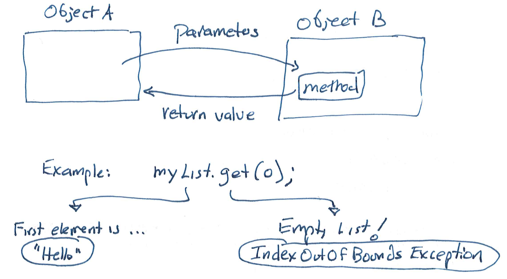
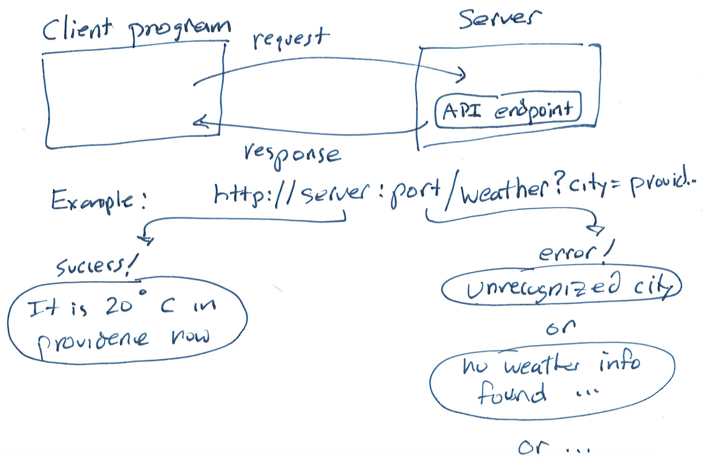
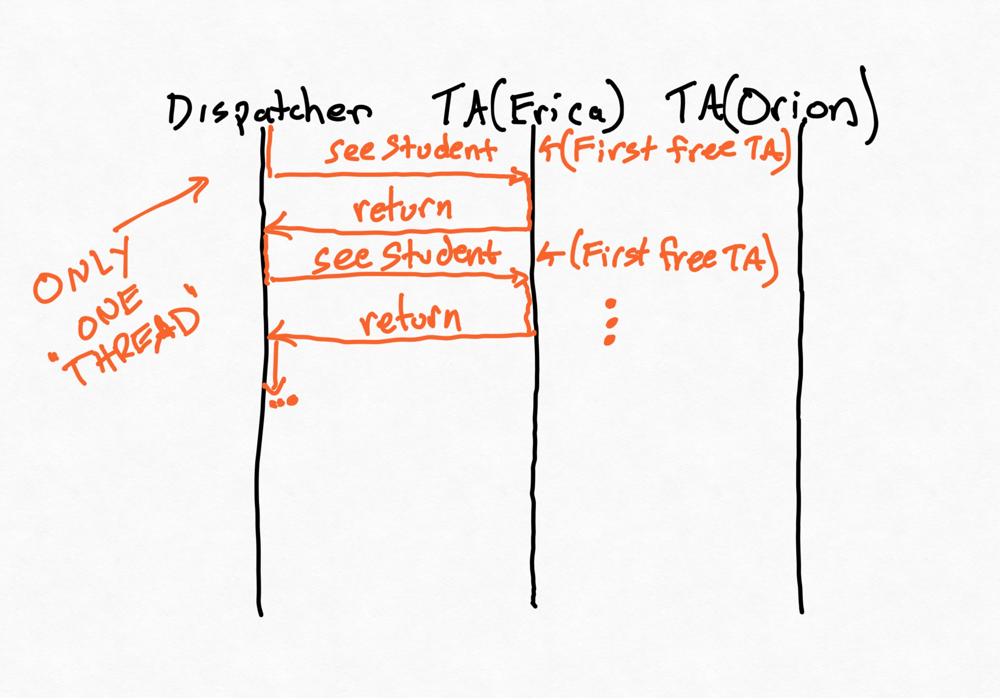
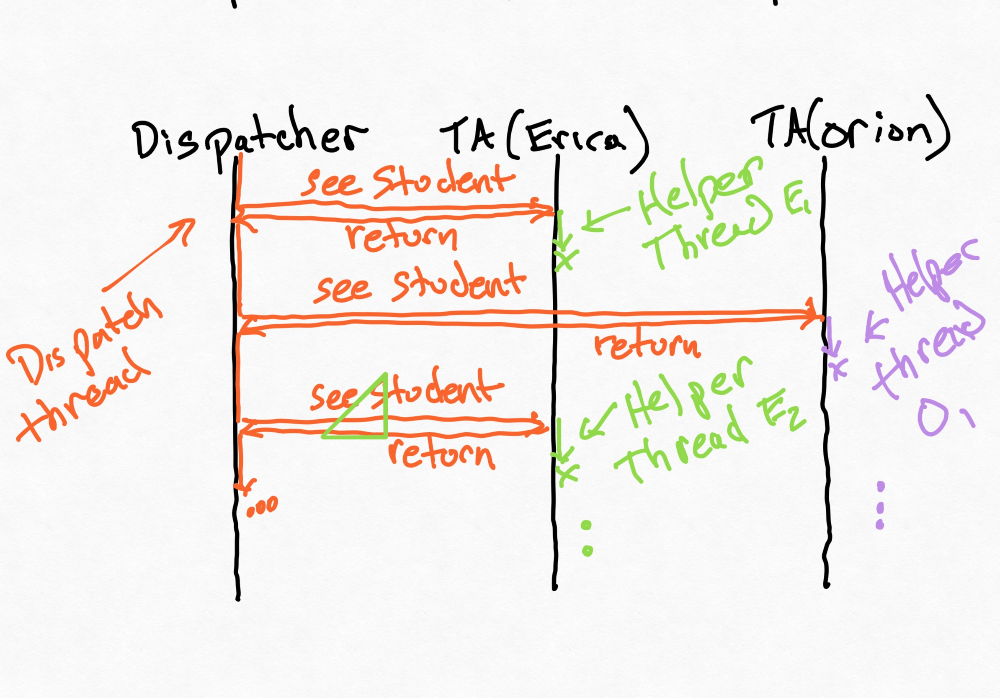

How to read these notes
Welcome to CSCI 0320/1340!
This page contains the lecture notes for the course. With JavaScript enabled, the table of contents will allow you to select a specific chapter. Likewise, the search icon should allow you to search for arbitrary words throughout all the notes. The lecture indexing is for Fall 2025. Some lectures are mainly done via slides, in which case we will attempt to link the slides here as well.
These notes are meant to be accompanied by the course live code repository, which contains a collection of code examples done in and out of class. The course assumes that students will review the live code.
This outline is subject to change, and notes are often modified in response to TA feedback or student Q&A before class. Some notes will be greyed out and inaccessible in the table of contents.
Exercises
Exercises are enclosed in expandable spoiler tags:
If you see an expandable piece of text, like this:
Think, then click.
Text for you to read after thinking or doing an exercise...
Success In 0320
Logistics
We have been moved to B&H.
- I check override requests every day after the course starts.
- If you need and get an override, please accept ASAP so that Brown and the department get accurate enrollment estimates. CAB does not report active overrides in the enrollment total, so delaying prevents others from getting in.
- If you are still shopping, keep 0320 in your cart so that you see announcements, etc. that we send to the list or post on EdStem. If you do not have 0320/1340 in your cart, I will not grant you an override.
- You need the prerequisites to take 0320 or 1340. If you haven't completed 0200, 0190, or a comparable course, you cannot take 0320 yet. (If you're a transfer student and concerned, let's talk; I was also a transfer student as an undergrad so I have some understanding of potential worries.)
When I say "0320" in the course notes, I mean both 0320 and 1340.
Welcome!
Before we get started, turn to the people sitting next you to now and introduce yourself.
The most important part of 0320 is collaboration. With the exception of the very first assignment, everything in 0320 is group work.
- You'll be submitting your work to repositories that everyone in the class can (eventually) read.
- You'll be helping one another solve bugs and design problems (even if you're in different project groups; this is a requirement). To make this work, we need a professional and friendly environment.
We'll be passing out index cards. I like to anonymously learn some important things about students in this class, so please fill one out, answering:
- What is a goal you have for 0320?
- What is something you need to succeed in 0320?
- What is something you're afraid of in 0320? At the end of class, leave your card either here in front or on (one single) chair in the back so I can collect.
0320 is Different
You'll want to read the missive. You may not need to read all of it super deeply yet, but you should note the ways that 0320 is different from what you're used to. E.g., you'll be getting formative feedback every week from a mentor. Like in industry, you will not be graded by an autograder.
TA Introductions
Speaking of mentors, let's introduce the TAs!
Disclaimer
This offering of 0320 is experimental. Much of the assignment content is new, as are the structured AI content. We've tried to minimize issues, but issues will happen. We'll act to mitigate them. Likewise, the perspective on AI we use is based on common practice as of summer 2025. I've reserved sprint 9 to address anything new that comes up (and have an assignment in reserve in case nothing does).
Immediate Advice
The first sprint goes out Monday, and there's a setup deliverable due before then. Please do it soon; you don't want to spend a lot of time early next week on setting up VSCode and so on.
Go to gear up sections. This semester, they're on Mondays and Tuesdays (with one exception around IPD). Switching doesn't require a "conference" switch in CAB.
Read lecture notes and livecode. More than reading the code examples, pull the code and experiment with them! I try to strike a balance between depth and drill in class, which means that when we have in-class work, these resources will be vital references. (Today, for example, I won't talk through every bullet point in these notes.)
Prototype early. (Paraphrasing Andy: Start soon! Start yesterday!)
Be aware that while this is an S/NC course, it is a lot of work. To quote a very wise remark from prior feedback: "You will work very hard, but not get an A".
Reading for Next Time
Read the missive.
Also, a short non-technical reading: Clever Manka. Read it. What does it have to do with software engineering?
There will be readings, but you won't need to pay for them.
Programming vs. Engineering
Let's say I asked you to open up your laptop and write me a sorting algorithm in the language of your choice. How would you react?
Think, then click.
Hopefully you didn't immediately start programming. I didn't really give you enough information, did I? I didn't say (among other things):- what kind of values you would have to sort;
- whether the sort needed to be stable, or in-place, or if there were any runtime requirements; or
- what the input interface should be (do you need to do file I/O or parse a CSV file?)
If you'd written insertion sort over lists of integers, but I needed to sort lists of records with a low worst-case runtime, you'd have had to start all over.
Get in the habit of asking questions. It will save you time and pain in the future.
Communicate clearly and often. It will save you time and pain in the future.
Document your assumptions and needs. It will save you time and pain in the future.
Don't misunderstand me: you'll work with a lot of code in this class. But just writing code is, frankly, not good enough.
What makes "good software"?
There are many valid viewpoints on this. In the context of 0320, we're going to think about a few dimensions.
- Is the software ready for change? (Can it be extended easily, and without modifying the original code?)
- Is the software safe from bugs? (Not just "bug free", but resilient to the bugs of other software that might call it, or that it might call.)
- Is the software easy to understand? (Is it well documented? Is it designed in a way that other engineers will be able to follow without a lot of work? Is it clear how to use it?)
- Is the software fit to purpose? (Does it do what it is supposed to do? Figuring that out involves a lot of work, because other people are involved.)
That last category is incredibly broad. For me, it incorporates issues beyond functional correctness like:
- performance,
- security,
- harm minimization, etc.
The 0320 Collaboration Standard
This may be the weirdest course you'll take during your time at Brown CS. It will also challenge you in new ways. That is deliberate.
Our goal is not to teach you to do better at programming courses, or even computer science courses in general. Our goal is to teach you to be a better engineer, period. That goal has some natural consequences.
The collaboration policy is part of that. We'll use Git, an industry standard version control system. If you haven't had Git experience yet, that's OK! Here's an example of how it works on a project I just happen to have here on my laptop. By the way, I'm using IntelliJ to work on this code. This course strongly encourages you to use (and supports) IntelliJ; the gear up sections today and tomorrow can help you set it up.
One advantage of using Git is that all the code from lecture will be available on a public repository in the F25 folder (for Fall 2025) and also in the vignettes subfolder, which I use for small examples that may or may not appear in class. You can clone the repository to experiment with the code on your own machine. You should clone this repository as soon as you're able; we'll use it for in-class exercises, and it gives you the ability to experiment with changing the code on your own machine. Starting next week, I will assume that you have the repository cloned on your laptop, if you bring one.
What About AI?
We'll use it. Please see the missive. There's lots of new stuff, and I've written enough text about it already. :-)
How Does Grading Work?
You may look at the first assignment and think "OMG I am not prepared!" But you are. This course is designed to prompt this feeling—in a safe environment, so you can build the skills necessary to navigate unpreparedness. The course works for those who embrace our (admittedly unusual) system.
If you're a highly prepared student and you find that even most supplemental problems aren't challenging you: this is your chance to cut loose. Impress me. Final demos are public for everyone, but for Master's students and undergraduates who opt in, they will be publicized.
0320 is mandatory S/NC. We award "S with distinction" based on completing supplemental sprint challenges, exceptional professionalism, and strong performance on the term project.
- The sprints let you demonstrate command of new technical skills, which we give formative feedback on.
- The term project lets you show you can apply those skills in a new context of your own. Expectations are stronger here: I want everyone to finish 0320 with a good item for their portfolio (whether you're going into traditional SWE or not).
The missive talks at length about grading; I won't try to duplicate all that information here. However, here are some key features of 0320's grading.
1-week sprints: You'll have a deliverable every week. This gives us a better cadence for feedback. You'll alternate between asynchronous video demos and synchronous demos each week, and the demos (and your answers to questions they ask) are the primary way your mentors will generate feedback.
Feedback Spreadsheet: You'll receive access to a spreadsheet where your mentors will leave formative feedback every week, along with whether you've met expectations for the week. We'll expect you to work on addressing this feedback between sprints.
No Hidden Rubrics: There are no secret rubrics or hidden test suites in 0320; we want you to know what our expectations are. You can see our grading instructions, and a recipe for giving demos, linked in the first sprint. (We do provide mentors with some additional private material to help them give feedback efficiently, but everything in that material is also in the sprint handouts.)
Collaboration Matters We would like to more strongly encourage collaboration between students. You'll need to earn a certain number of crests throughout the semester and per sprint. You will handle reporting this to us on your feedback sheet.
Testing Matters: We'll talk more about testing on Tuesday, but it should go without saying that in 0320, we take testing seriously. The handouts contain pretty good advice on meeting our requirements. Read them.
TypeScript
We're going to be using TypeScript for nearly all of this course. Last year, we used Java for the "back end" and TypeScript on the "front end", and it was tough to devote enough time to general TypeScript practice. So we're doing everything in one language. The first two weeks give you an introduction.
TypeScript is essentially "JavaScript with types". It transpiles to JavaScript, meaning that Node and your browser only need to "understand" JavaScript. Why do we need types here, though?
Equality
When I'm learning a new language, I like to identify language features that I rely on, and experiment with them. Coming up with these facets isn't always easy, which is why we're doing it together. For instance, let's check out equality, a deceptively simple yet subtle idea that many languages differ on. We've got a couple options for our experiments:
- If we were interested in web behavior, I'd use the console of whatever browser I wanted. (Safari's JS console is Command-Option-C, if you've enabled developer tools.
- If we were interested in general program behavior, I'd just run Node. Node is a runtime library for JavaScript that's often used for backend servers—the same sort of setting you might see a Java program used for.
Behavior isn't always the same between these. We'll get to that later. For now, let's use Node.
> 15 == "15"
true
> 15 == true
false
> 1 == true
true
0 == false
true
Already we've learned a great deal. JavaScript's == operator performs type conversion before comparing values. It allows us to pretend that the number 1 is "true" and that the number 0 is "false", but other numbers aren't equivalent to either.
Those of you who have programmed in Racket before: notice this is different from Racket! In Racket, every non-false value (Racket calls false #f) is considered true. The same is true in many other languages.
JavaScript has a second equality operator, ===, that checks for equality without type conversion. So:
> 15 === "15"
false
Java also has two different types of equality (== and the .equals method), but there the difference has nothing to do with implicit type conversion, but with references vs. structural equality. JavaScript's implicit conversion adds an extra layer of complexity.
Arithmetic
Let's try a few arithmetic operators that are often overloaded across different languages.
> '1' + 1
'11'
> 1 + '1'
'11'
> 1 - '1'
0
> '1' - 1
0
JavaScript tries to "do the reasonable thing" whenever possible. This can lead to surprising bugs; When in doubt, use explicit conversion functions (e.g., parseInt). In fact, let's try a couple more (Credit for these to Gary Bernhardt from 2012---it's 4 minutes long; watch it.) For context, [] denotes an array or list in JavaScript and {} denotes an object.
> [] + []
""
> {} + {}
'[object Object][object Object]'
> [] + {}
[object Object]
Do you see why TypeScript is helpful, now? JavaScript lets you throw off the constraints of the type system, but those constraints are like a safety belt on a roller coaster.
Supplemental: What's Really Happening?
The details involve how JavaScript is implicitly converting between different types. Before applying +, it converts to a "primitive" type, which for an object is a string. An empty array is converted to the empty string. And so on. The details would consume a full class, or more! Just beware, and embrace types.
Objects
While we won't be using TypeScript classes much in 0320, we can't avoid using objects. Objects are collections of fields; there's no sharp distinction between fields that are methods and fields that are data. If you've used Python before, these may remind you of dictionaries. For example:
> const cat = {talk: function() { console.log('meow'); }}
undefined
This defines a value for the variable cat. The console (in both a browser and in Node) displays undefined because that's the return value of the definition statement.
> cat.talk
function talk()
The value of cat.talk is a function. We can pass it around the same way we would a string or a number. But we can also call it:
> cat.talk()
meow
undefined
Again, the console is printing the "meow" and then saying what the return value was. You won't need to worry about this apparent double result when you're working with TypeScript in general.
Don't get too attached to the method-style syntax, however. Objects in TypeScript are more flexible. A field is a field, no matter what it contains:
> cat["talk"]
function talk()
> cat["talk"]()
meow
undefined
You'll get a lot more practice with TypeScript over the next 2 weeks.
TypeScript Types
TypeScript works a little bit differently from Java. See the Thinking Like an Engineer: Types document for more. I'll cover some of them live today and Tuesday.
We'll be using a library called Zod for validation, and to enrich what types can give us. Zod appears in the very first sprint! I'll be talking about it on Tuesday, but do not wait until then to start the sprint. There are other, Zod-free deliverables.
The Debugging Recipe
Rule One
Never debug when tired or angry. If you must debug when tired, commit to a stopping time. Set a timer or ask a friend to help you keep that commitment.
Identify What's Wrong
Assemble your knowledge. Write no more than two sentences for each question:
- What is the purpose of the code you're working on?
- What steps can you perform to reproduce the bug?
- What is the expected behavior/result, and what is the unexpected actual behavior/result?
- Why do you expect the result that you expect?
Tell the Story
Now describe how you think the system operates as it approaches the unexpected actual result. Write your description as a series of steps. Use no more than one or two sentences for each step, but each step should be testable as a hypothesis about how the system works.
Localization
Confirm each step in your description is accurate. Use any reasonable means (e.g., print statements or a debugger). The first step where the program behaves unexpectedly is a possible location for the original bug. More commonly, it contains the call site for the actual buggy code.
Record this location, along with the expected and actual behavior.
Explanation
If you have a hypothesis about the cause of the bug, make an experiment to see if you are correct.
- If yes, proceed to fix the problem. Whenever possible, add a regression test so that this bug will be quickly identified if it happens again. Re-run all tests to confirm that your "fix" hasn't broken something else.
- If you have no hypothesis, or your hypothesis was incorrect, increase your level of detail about that single step. Look for unstated assumptions and dependencies; often, you'll find you left something important out of the original story. Then repeat the localization step.
Agile, Lambdas, and Validation
Logistics
If you haven't yet installed Node or cloned the starter code, it would be a good idea to do that ASAP.
We don't have a no-laptops policy in 0320. But if you're going to play chess or write an essay while in class, please sit where you won't distract anyone sitting behind you.
Agile Development
We're going to be using a few terms of art in 0320. While we do put a bit of our own spin on these (largely because this is a class, and not a full-time job) it's important to understand what's going on.
We say that a development methodology is agile if, broadly speaking, it prioritizes the ability to change plans in response to regularly-sought feedback. Once we try to define it more precisely, you'll find multiple competing definitions, and many competing methodologies that purport to be "agile". But change and feedback are good enough for us today.
Usually, you'll see the term used in contrast to "waterfall" development, where the software project proceeds along a linear path, like this:
- Requirements
- Specifications
- Design
- Implementation
- Testing
- Maintenance
Of course, all of these "phases" still exist in an agile project! The difference is that (e.g.) customer feedback on an early demo might result in changes to the requirements, or some trouble with testing an early prototype might mean changing the design to make testing easier. To make this possible, agile projects usually start development early, expecting that some, or even most, of that prototype code will be replaced later. But something must be possible to demo at every stage, or feedback is hard to obtain.
Sprints
Agile development is often divided into short periods of development effort: sprints. The duration of a sprint varies depending on the project and company. In 0320, we've organized development into one-week sprints with relatively small requirements for each. Each sprint builds on the last.
Organizing sprints is an important skill for project managers. Timelines need estimates (and the ability to alter those estimates when needed), tickets need to be managed, and so on. We'll gloss over most of this in 0320, although your term project will need some attention to project-management tasks like these.
User Stories
A user story is a short description of desired behavior. You'll often find these used in requirements documents for agile projects. There are a few templates, but we (mostly) follow the "As a USER-ROLE I can NEEDED-BEHAVIOR so that TASK-OR-BENEFIT" pattern. Look at the user stories in sprint 1.1, and you should see this pattern.
It's important to remember that, although they follow a template, user stories are informal: they may not be enough by themselves to really describe what the customer needs. To help bridge this gap, they are often accompanied by acceptance criteria, which give additional lower-level requirements. But these are still fairly informal, and there's often a need for more precise specification to be agreed upon between developers!
But what makes a good user story? A user story describes a narrow, demoable piece of functionality that can reasonably be accomplished in a single sprint. Often, you might start with a rough user story and realize that it's too big, and then split it into multiple stories. If users request an enhancement to an existing story, commonly these would be added as new stories (and more infrequently as additional acceptance criteria).
If you're building a software package that is intended for other developers to use, they are potential users! In this class we will be giving you user stories from the developer-user perspective in addition to the end-user perspective. Your API design, documentation, etc. will matter to developer users.
Reading: Clever Manka
There's a fairy tale I like: Clever Manka, from a 1920's compilation called The Shoemaker's Apron, available on Project Gutenburg here. I'll reproduce the text in full here, within these spoiler tags.
Clever Manka
There was once a rich farmer who was as grasping and unscrupulous as he was rich. He was always driving a hard bargain and always getting the better of his poor neighbors. One of these neighbors was a humble shepherd who in return for service was to receive from the farmer a heifer. When the time of payment came the farmer refused to give the shepherd the heifer and the shepherd was forced to lay the matter before the burgomaster.
The burgomaster, who was a young man and as yet not very experienced, listened to both sides and when he had deliberated he said:
"Instead of deciding this case, I will put a riddle to you both and the man who makes the best answer shall have the heifer. Are you agreed?"
The farmer and the shepherd accepted this proposal and the burgomaster said:
"Well then, here is my riddle: What is the swiftest thing in the world? What is the sweetest thing? What is the richest? Think out your answers and bring them to me at this same hour tomorrow."
The farmer went home in a temper.
"What kind of a burgomaster is this young fellow!" he growled. "If he had let me keep the heifer I'd have sent him a bushel of pears. But now I'm in a fair way of losing the heifer for I can't think of any answer to his foolish riddle."
"What is the matter, husband?" his wife asked.
"It's that new burgomaster. The old one would have given me the heifer without any argument, but this young man thinks to decide the case by asking us riddles."
When he told his wife what the riddle was, she cheered him greatly by telling him that she knew the answers at once.
"Why, husband," said she, "our gray mare must be the swiftest thing in the world. You know yourself nothing ever passes us on the road. As for the sweetest, did you ever taste honey any sweeter than ours? And I'm sure there's nothing richer than our chest of golden ducats that we've been laying by these forty years."
The farmer was delighted.
"You're right, wife, you're right! That heifer remains ours!"
The shepherd when he got home was downcast and sad. He had a daughter, a clever girl named Manka, who met him at the door of his cottage and asked:
"What is it, father? What did the burgomaster say?"
The shepherd sighed.
"I'm afraid I've lost the heifer. The burgomaster set us a riddle and I know I shall never guess it."
"Perhaps I can help you," Manka said. "What is it?"
So the shepherd gave her the riddle and the next day as he was setting out for the burgomaster's, Manka told him what answers to make.
When he reached the burgomaster's house, the farmer was already there rubbing his hands and beaming with self-importance.
The burgomaster again propounded the riddle and then asked the farmer his answers.
The farmer cleared his throat and with a pompous air began:
"The swiftest thing in the world? Why, my dear sir, that's my gray mare, of course, for no other horse ever passes us on the road. The sweetest? Honey from my beehives, to be sure. The richest? What can be richer than my chest of golden ducats!"
And the farmer squared his shoulders and smiled triumphantly.
"H'm," said the young burgomaster, dryly. Then he asked:
"What answers does the shepherd make?"
The shepherd bowed politely and said:
"The swiftest thing in the world is thought for thought can run any distance in the twinkling of an eye. The sweetest thing of all is sleep for when a man is tired and sad what can be sweeter? The richest thing is the earth for out of the earth come all the riches of the world."
"Good!" the burgomaster cried. "Good! The heifer goes to the shepherd!"
Later the burgomaster said to the shepherd:
"Tell me, now, who gave you those answers? I'm sure they never came out of your own head."
At first the shepherd tried not to tell, but when the burgomaster pressed him he confessed that they came from his daughter, Manka. The burgomaster, who thought he would like to make another test of Manka's cleverness, sent for ten eggs. He gave them to the shepherd and said:
"Take these eggs to Manka and tell her to have them hatched out by tomorrow and to bring me the chicks."
When the shepherd reached home and gave Manka the burgomaster's message, Manka laughed and said: "Take a handful of millet and go right back to the burgomaster. Say to him: 'My daughter sends you this millet. She says that if you plant it, grow it, and have it harvested by tomorrow, she'll bring you the ten chicks and you can feed them the ripe grain.'"
When the burgomaster heard this, he laughed heartily.
"That's a clever girl of yours," he told the shepherd. "If she's as comely as she is clever, I think I'd like to marry her. Tell her to come to see me, but she must come neither by day nor by night, neither riding nor walking, neither dressed nor undressed."
When Manka received this message she waited until the next dawn when night was gone and day not yet arrived. Then she wrapped herself in a fishnet and, throwing one leg over a goat's back and keeping one foot on the ground, she went to the burgomaster's house.
Now I ask you: did she go dressed? No, she wasn't dressed. A fishnet isn't clothing. Did she go undressed? Of course not, for wasn't she covered with a fishnet? Did she walk to the burgomaster's? No, she didn't walk for she went with one leg thrown over a goat. Then did she ride? Of course she didn't ride for wasn't she walking on one foot?
When she reached the burgomaster's house she called out:
"Here I am, Mr. Burgomaster, and I've come neither by day nor by night, neither riding nor walking, neither dressed nor undressed."
The young burgomaster was so delighted with Manka's cleverness and so pleased with her comely looks that he proposed to her at once and in a short time married her. > >"But understand, my dear Manka," he said, "you are not to use that cleverness of yours at my expense. I won't have you interfering in any of my cases. In fact if ever you give advice to any one who comes to me for judgment, I'll turn you out of my house at once and send you home to your father." > >All went well for a time. Manka busied herself in her house-keeping and was careful not to interfere in any of the burgomaster's cases. > >Then one day two farmers came to the burgomaster to have a dispute settled. One of the farmers owned a mare which had foaled in the marketplace. The colt had run under the wagon of the other farmer and thereupon the owner of the wagon claimed the colt as his property. > >The burgomaster, who was thinking of something else while the case was being presented, said carelessly: > >"The man who found the colt under his wagon is, of course, the owner of the colt." > >As the owner of the mare was leaving the burgomaster's house, he met Manka and stopped to tell her about the case. Manka was ashamed of her husband for making so foolish a decision and she said to the farmer: > >"Come back this afternoon with a fishing net and stretch it across the dusty road. When the burgomaster sees you he will come out and ask you what you are doing. Say to him that you're catching fish. When he asks you how you can expect to catch fish in a dusty road, tell him it's just as easy for you to catch fish in a dusty road as it is for a wagon to foal. Then he'll see the injustice of his decision and have the colt returned to you. But remember one thing: you mustn't let him find out that it was I who told you to do this." > >That afternoon when the burgomaster chanced to look out the window he saw a man stretching a fishnet across the dusty road. He went out to him and asked: > >"What are you doing?" > >"Fishing." > >"Fishing in a dusty road? Are you daft?" > >"Well," the man said, "it's just as easy for me to catch fish in a dusty road as it is for a wagon to foal." > >Then the burgomaster recognized the man as the owner of the mare and he had to confess that what he said was true. > >"Of course the colt belongs to your mare and must be returned to you. But tell me," he said, "who put you up to this? You didn't think of it yourself." > >The farmer tried not to tell but the burgomaster questioned him until he found out that Manka was at the bottom of it. This made him very angry. He went into the house and called his wife. > >"Manka," he said, "do you forget what I told you would happen if you went interfering in any of my cases? Home you go this very day. I don't care to hear any excuses. The matter is settled. You may take with you the one thing you like best in my house for I won't have people saying that I treated you shabbily." > >Manka made no outcry. > >"Very well, my dear husband, I shall do as you say: I shall go home to my father's cottage and take with me the one thing I like best in your house. But don't make me go until after supper. We have been very happy together and I should like to eat one last meal with you. Let us have no more words but be kind to each other as we've always been and then part as friends." > >The burgomaster agreed to this and Manka prepared a fine supper of all the dishes of which her husband was particularly fond. The burgomaster opened his choicest wine and pledged Manka's health. Then he set to, and the supper was so good that he ate and ate and ate. And the more he ate, the more he drank until at last he grew drowsy and fell sound asleep in his chair. Then without awakening him Manka had him carried out to the wagon that was waiting to take her home to her father. > >The next morning when the burgomaster opened his eyes, he found himself lying in the shepherd's cottage. > >"What does this mean?" he roared out. > >"Nothing, dear husband, nothing!" Manka said. "You know you told me I might take with me the one thing I liked best in your house, so of course I took you! That's all." > >For a moment the burgomaster rubbed his eyes in amazement. Then he laughed loud and heartily to think how Manka had outwitted him. > >"Manka," he said, "you're too clever for me. Come on, my dear, let's go home." > >So they climbed back into the wagon and drove home. > >The burgomaster never again scolded his wife but thereafter whenever a very difficult case came up he always said: > >"I think we had better consult my wife. You know she's a very clever woman."
Stories like this appear in numerous places throughout the world. For example, India has the story of Hiranyakashipu, a king with a boon protecting him from death "by day or by night", "indoors and out", etc. Narasimha, an avatar of Vishnu, finds a way around the riddle.
These stories are so common that I might say humans find something universally valuable about them. but what in the world does a fairy tale have to do with testing?
If you're reading these notes without having been in lecture: think about these questions first, before you read the answer! If you don't, you'll be robbing yourself of a chance to participate and learn. (The collapsible sections are meant to help you avoid spoilers while you think.)
Don't worry about whether your answer is the same as mine. Especially in 0320, there are often many different good answers, even to technical questions.
Think, then click!
Clever Manka is a boundary condition tale. There is something special about boundary conditions and how they challenge our preconceptions. As testers, we should give boundaries the respect they deserve.
(Are you aware of more mythological or literary settings for this sort of boundary-condition riddle? Share them with Tim!)
Boundary Conditions: Testing and Defensive Programming
Here's an example: "I have tested a positive number, and I have tested a negative number." Surely all numbers are positive or negative. (Is this true?)
Here's another example: "I have tested this function, which accepts a Java Boolean, on both values: true and false." (What's missing?)
Never assume that the obvious partition of the space actually covers the space; be on the lookout for special cases, outliers, and even new dimensions about which to think. This isn't only about testing, either---see, for example, the Falsehoods Programmers Believe About Time. Part of programming defensively is trying to avoid making unnecessary assumptions, while still allowing for extensibility. Keep this in mind as we start to code (and test) together.
Runtime Validation
Ok, so we're on the lookout for faulty assumptions that we might make when programming. But what about other people who might be writing code we depend on—or even code that calls ours? We can't solve this problem, and (as careful as we might be) we can't entirely solve it for ourselves, either. So we'll need to make our code robust against bugs, whether they are our mistakes or others'.
Runtime validation involves checking for issues with data your code is given, unexpected changes in state, and so on. Here are two examples.
Example 1: User Input
Suppose that a user just typed in a pair of numbers and we want to know if one is bigger than another. Because they just arrived, they will be strings, so we need to convert them. No problem:
function rawGreaterThan(arg1: string, arg2: string): boolean {
return parseInt(arg1) > parseInt(arg2)
}
This seems reasonable enough, but it forgets something important about numbers in JavaScript: NaN (not a number) is a number. Since TypeScript is JavaScript with added protection, the same is true in TypeScript. Imagine that a user accidentally types "!00" instead of "100". In Java, we'd get an exception since "!00" can't be converted to a number. But in TypeScript, parseInt("!00") produces a value: NaN. And NaN isn't greater or less than anything! (It can't even be equal to itself: NaN == NaN evaluates to false.) So:
> parseInt("!00") > parseInt("100")
false
> parseInt("!00") <= parseInt("100")
false
Oh, dear. It's one of those pesky boundary conditions! But the problem is invisible outside of our function. The caller only gets a boolean. Let's do some validation to protect them and us. We'll first check that both arguments can be converted:
function rawGreaterThan(arg1: string, arg2: string): boolean | undefined {
const num1 = parseInt(arg1)
const num2 = parseInt(arg2)
// num1 === NaN won't work! Instead:
if(Number.isNaN(num1) || Number.isNaN(num2)) return undefined
return parseInt(arg1) > parseInt(arg2)
}
Now the caller will be given something special if there's an issue converting the input to numbers. We could improve this, actually: undefined is better than hiding the problem, but it doesn't communicate much. We could throw an error, but instead let's explore building a better error value.
interface ConversionError {
error: "parseInt"
arg1: string
arg2: string
}
Yeah, that's a string literal as the type of the error field. In TypeScript, this means the type containing only that string. Thus, the error field can only ever be the string "parseInt" So why have that field at all? Because if our larger program can ever produce a different kind of conversion error, we can add other options via union types:
interface ConversionError {
error: "parseInt" | "parseFloat" // | ... | ... | etc.
arg1: string
arg2: string
}
If we said error: string instead, we'd be allowing any old string. Sometimes this is what you want, but if you're establishing a protocol for reporting errors, you probably want an enumeration of error codes, not arbitrary strings. Anyway, now we can write:
function rawGreaterThan(arg1: string, arg2: string): boolean | ConversionError {
const num1 = parseInt(arg1)
const num2 = parseInt(arg2)
if(Number.isNaN(num1) || Number.isNaN(num2))
return {error: "parseInt", arg1: arg1, arg2: arg2}
return parseInt(arg1) > parseInt(arg2)
}
The caller is now being told exactly what the problem is, not only that they had some kind of problem. This is only possible because we're now validating the input.
Reading Data
The same problem occurs if you're reading in data from files or responses to your web requests. Suppose the registrar stored student information in a comma-separated-value (CSV) file:
Name,Credits,Email
Tim Nelson,10,Tim_Nelson@brown.edu
Nim Telson,11,MYAWESOMEEMAIL
If I expect the third column to contain an email address, I'm going to be very surprised with the data I get from the second row. Hopefully the registrar is validating every column of every row so they can avoid relying on the bad data. But now it's not as simple as it was before: do I need to manually write a validation function that matches all possible email addresses? Argh!
Library Support: Zod
Fortunately, people write and share libraries that solve real problems. We'll be using a library called Zod, which is built to help us with exactly these kinds of validation tasks. Zod is free, open source, and widely used. Zod works off of something called a schema, which is kind of analogous to a type (not entirely; more on this later). Here's a schema to validate each CSV row according to the registrar's expectations:
const studentRowSchema = z.tuple([z.string(), z.coerce.number(), z.email()])
Zod schemas are compositional. z.string() is a schema that matches any string. z.coerce.number() is a schema that matches any number or any string that can be converted to a number. z.email() is a schema that matches strings containing email addresses. And z.tuple takes an array of schemas and matches arrays of exactly the same length, where each of the sub-schemas matches its corresponding array element.
I hear that at this point, you might be enhancing a CSV parser. Probably it splits a big file into rows, and then splits each row by , (or something like that) to produce an array. So for the 2-row example above, you might get a string[][] that looks like:
[["Tim Nelson","10","Tim_Nelson@brown.edu"],
["Nim Telson","11","MYAWESOMEEMAIL"]]
The first row will match the schema, but the second won't: "MYAWESOMEEWMAIL" isn't an email address. Zod will give a structured error for this failure, although it contains even more detail than the parseInt error we built before.
Zod makes validating external data much, much easier. Whenever validation becomes non-trivial, stop writing ad-hoc if statements and use Zod instead.
Anonymous Functions
Zod doesn't just do validation: it can also transform data into new shapes. But it needs us to tell it how that transformation works: a strategy function that says how to map the old shape into the new one. Often, we'll use an anonymous function for this. Anonymous functions are sometimes called "lambdas" (e.g., in Python). Even Java has them in the form of the Function<T, R> interface and special syntax to build them concisely. TypeScript's syntax for these is quite similar to Java's.
For example, let's turn a (validated) CSV row into an object instead:
const studentRowSchema = z.tuple([z.string(), z.number(), z.email()])
.transform(arr => ({name: arr[0], credits: arr[1], email: arr[2]}))
Now the first row becomes an object: {name: "Tim Nelson", credits: 10, email: "Tim_Nelson@Brown.edu"}.
Passing functions arguments to to other functions is so powerful that it appears in multiple contexts. In Object-Oriented Programming, you see it everywhere under the name of "strategy pattern". For example, Java's Collections.sort method takes an object called a Comparator. A Comparator implements a method that takes two elements of the collection and says whether one is greater than another. In this way, the Collections library allows a single type to be sorted many different ways.
Many objects implement Java's Comparable interface, and Collections.sort will indeed use that if no comparator is provided. The advantage of taking arbitrary comparators is in its flexibility: the caller might want to sort in ascending or descending order for example. Records might be sorted by one key or another key, and so on. The strategy pattern is all about flexibility.
Exercise
I'm not going to start the required exercises this early in shopping period. But I'd still like us to get some practice with TypeScript.
Tools Challenge: package.json
Let's start with the toolchain we're using in the course. You've probably cloned the starter repository by now. Let's look at the package.json file together. JSON means "JavaScript Object Notation", and it's a very common text data format. You'll see fields like dependencies and scripts and so on. What do you think they mean? How do they interact with the npm console command?
Research has shown that instruction is more effective if students commit to a hypothesis first, rather than being told the answer immediately. I also want you to finish 0320/1340 with a confidence in making guesses that might be wrong.
Design Challenge: Unchecked Casting
Just like Java, TypeScript has a way to tell the type checker to be quiet because you know best. We call these "unchecked typecasts". In TypeScript, this happens whenever a value has type any. You might explicitly cast this (via as any) or TypeScript might infer the type because it has no further context. The any type exists because TypeScript needs to interoperate with untyped JavaScript, and it's dangerous to keep around if you don't need it.
Union types mean that TypeScript may be "uncertain" about your code. Here's an example:
function whatToDo(input: string[] | number): string {
return input[0]
}
If the input is a string array, this is fine. But what if it's a number? TypeScript reports this problem with the following error:
Element implicitly has an 'any' type because expression of type '0' can't be used to index type 'number | string[]'.
Property '0' does not exist on type 'number | string[]'.ts(7053)
What should you do about this?
Think, then click!
Any time you see something like "Element implicitly has an 'any' type" you should be suspicious. It means that you haven't given TypeScript enough information. This information might need to go in your function headers, in your variable declarations, or the logical flow of your code. Notice what happens when I add an if statement:
function whatToDo(input: string[] | number): string {
if(typeof input === "number") return ""
return input[0]
}
The error goes away! TypeScript looks at your conditionals for hints, and uses those hints to resolve union types and other kinds of uncertainty. This is called narrowing, because TypeScript is able to reduce the size of the set of possible values.
We'll talk more about this trick soon.
The typeof operator is technically part of JavaScript, and it isn't very precise at all! JavaScript has only a few "types":
string;object;number; and ...only a few others.
JavaScript, on its own, makes no distinction between an array and an object, or between two different kinds of object. This is one thing TypeScript handles a lot better, but it still can use these basic JavaScript checks.
Narrowing and Refinements
My Homework
Last time, a student asked what would happen if we didn't return an object directly, and instead worked with it before returning it.
function rawGreaterThan(arg1: string, arg2: string):
boolean | ConversionError {
const num1 = parseInt(arg1)
const num2 = parseInt(arg2)
if(Number.isNaN(num1) || Number.isNaN(num2)) {
// This produces an error
const result = {error: 'parseInt', arg1: arg1, arg2: arg2}
return result
// Before, it was:
//return {error: 'parseInt', arg1: arg1, arg2: arg2}
}
return num1 > num2
}
The error isn't super helpful:
Type '{ error: string; arg1: string; arg2: string; }' is not assignable to type 'boolean | ConversionError'.
Type '{ error: string; arg1: string; arg2: string; }' is not assignable to type 'ConversionError'.
Types of property 'error' are incompatible.
Type 'string' is not assignable to type '"parseInt" | "parseFloat"'
But it's surprising, right? Look at that first type. TypeScript isn't using the literal string: it's inferring string for the error field. Initially, TypeScript can directly infer the return type and then check for consistency. TypeScript isn't smart enough to carry that inference over to the value of result without help. So we'll provide it:
const result: ConversionError = {error: 'parseInt', arg1: arg1, arg2: arg2}
Now the error goes away. Sometimes we do need to give TypeScript a little help.
Testing as a Human
Suppose your job is to build a statistical app that summarizes United Nations data on population, GDP, and so on. You need to test your app, so think of a country. What country are you thinking of?
Think, then click!
Chances are, the country you thought of was:
- close to home;
- large; or
- in the news often.
And it's even more likely that the country you thought of was currently in existence. You probably didn't say "the USSR" or "Austria-Hungary". And note that my choices there were all limited by my own historical knowledge. I went and looked up more after writing that sentence. Even if we only count nations that existed after the U.N. was created, there are many: the Republic of Egypt (1953-1958), the Fourth Brazilian Republic (1946-1964), etc.
This is an example of something called availability bias (or the availability heuristic). All humans exhibit it, and usually it's an advantage: just like caching in a program, our brains tend to recall information in cache. For us, it's an energy-saving measure.
I'm not a cognitive scientist! If you want to learn more about this in depth, take a CLPS class. But even so, let's ask: How does this cognitive phenomenon impact software testing?
Think, then click!
You probably test what you have loaded into your mental cache. If you aren't thinking of it at the moment, or haven't been thinking of it recently, you likely won't test it unless you work to find examples outside your current context.
Even worse, if you aren't aware of the thing to begin with, you won't think to test it. Beware of the kind of thing that Iain Banks called an "outside context problem", translated from fiction into the real world of testing. This is why getting outside feedback from others can be so valuable for testing.
TypeScript: Narrowing
We saw last time that TypeScript uses the control flow of your program to infer type information. You can read more about this in the TypeScript documentation. For now, let's do a few narrowing exercises.
Recall: last time we used the typeof operator to check whether a value was a number. This operator is from JavaScript, and there aren't many "types" in that setting: string, number and a few others. To really use TypeScript well, we'll need more than typeof.
Calling a schema's safeParse method in Zod will return either a "success" or "failure" type. If we call parse instead then we might get an exception. I think safeParse is better, because it lets us keep some useful context for the caller in a normal value. Here's an example. First, we'll define the (more simple) schema from last time:
// Mouse over type: z.ZodTuple<[z.ZodString, z.ZodCoercedNumber<unknown>, z.ZodEmail], null>
const studentRowSchema = z.tuple([z.string(), z.coerce.number(), z.email()])
We can make the types cleaner by creating a new identifier and using z.infer. But we have to use it right, or we get a strange error:
// Property 'infer' does not exist on type
z.infer<typeof studentRowSchema>
The error isn't great, but it means we're misusing infer. It's not a function in TypeScript; it operates on types. So we can't just call it like it is a normal function; we need to put it into a type context:
type StudentRow = z.infer<typeof studentRowSchema>
Now let's call safeParse:
// We don't need the explicit type annotation here. You can mouse over without it and you'll see:
// type ZodSafeParseResult<T> = z.ZodSafeParseSuccess<T> | z.ZodSafeParseError<T>
// Either way, this is a union type!
const result: z.ZodSafeParseResult<StudentRow> = studentRowSchema.safeParse(["Tim Nelson", 10, "Tim_Nelson@brown.edu"])
The result value is either a success or an error. We can try to get the data either way, but it will be undefined in the error case. So this won't work as written:
// Error: 'result.data' is possibly 'undefined'
result.data[0]
A great time to use narrowing!
// This works: we're directly checking that the value is not undefined
if(result.data) {
result.data[0]
}
// This also works
if(result.success) {
result.data[0]
}
Wait: how is TypeScript able to infer the type of result.data based on result.success? Let's look at the definition of these types.
// From Zod's library code
export type ZodSafeParseResult<T> = ZodSafeParseSuccess<T> | ZodSafeParseError<T>;
export type ZodSafeParseSuccess<T> = {
success: true;
data: T;
error?: never;
};
export type ZodSafeParseError<T> = {
success: false;
data?: never;
error: ZodError<T>;
};
Notice that the type of success differs. It can only be true in a ZodSafeParseSuccess. That's how TypeScript narrows the type in the second case.
Added after class: Using result.success to narrow the type of result.data worked above. But if we give an intermediate name to result.data outside the narrowed scope, that variable will have the union type, and the link is broken for TypeScript:
const student: StudentRow | undefined = result.data
if(result.success) {
console.log(student[0]) // type error: possibly undefined
}
But this works, because the variable is declared within the narrowed scope:
if(result.success) {
const student2 = result.data
console.log(student2[0])
}
Escaping the any type
There are built-in ways to parse JSON in TypeScript. Let's play:
const jsonString = '{"course": "CSCI 0320", "instructor": "Tim Nelson"}';
// cs32 has inferred value *any*. TypeScript sees a string being parsed, it has no way to know the result type.
const cs32 = JSON.parse(jsonString);
This seems OK, right? But then:
// We can check whether a key exists on an object
if("course" in cs32) {
// Notice the mouseover type is still: any
console.log(cs32["course"])
// So I can do this with no problem:
console.log(cs32["DOESNT_EXIST"])
// The "if" statement is doing nothing! We get no protection!
}
TypeScript trusts the any type. It always applies, and so narrowing doesn't matter. This is worse than it appears. What happens if we add a new field?
const cs32_withLocation = {...cs32, location: "B&H"}
// The inferred type is _still any_. ARGH!
We might try to protect ourselves
interface ClassWithLocation {
course: string,
instructor: string,
location: string
}
const cs32_withLocation_better: ClassWithLocation = {...cs32, location: "B&H"}
// Whew! Now we're safe, right? Well...
const jsonString2 = '{"course": 17, "teacher": "Tim Nelson"}';
const cs32_bad = JSON.parse(jsonString2)
const cs32_withLocation_bad_better: ClassWithLocation = {...cs32, location: "B&H"}
// Oh. Oh no. TypeScript _trusts the any type_ implicitly.
// So I can't get where the actual data is:
console.log("Prof. " + cs32_withLocation_bad_better.teacher)
// But I can reference a field that doesn't exist.
console.log("Prof. " + cs32_withLocation_bad_better.instructor)
How do we deal with any? TypeScript has a feature called type predicates that can work. But those can be verbose. We'd like a simpler solution in this situation. Fortunately, Zod is great for exactly this.
const classRecordSchema = z.object({course: z.string(), instructor: z.string()})
// What do you think each of these will produce?
const result1 = classRecordSchema.safeParse(cs32_withLocation_better)
const result2 = classRecordSchema.safeParse(cs32)
const result3 = classRecordSchema.safeParse(cs32_withLocation_bad_better)
What do you think these produce? Try it.
Try it, then click!
result1: a success result containing{"course":"CSCI 0320","instructor":"Tim Nelson"}result2: a success result containing{"course":"CSCI 0320","instructor":"Tim Nelson"}result3: an error result reporting 2invalid_typeerrors: one forcourse(number) and one forinstructor(undefined).
Notice that both result1 and result2 contain the same values, even though one of them had a location field originally. This is because Zod throws away fields it isn't told to keep, at least by default. If we want to avoid this, we use .passthrough():
const classRecordSchema = z.object({course: z.string(), instructor: z.string()}).loose()
Now the location field is kept, if there is one there. (But, of course, now TypeScript will need some convincing before it lets you access that field.)
Refinements
We saw before that Zod can create schemas that are richer than what TypeScript types can represent.. TypeScript has no type for "email addresses", but Zod has a schema for them. But a type is just a set. So it's not that these richer schemas can't be thought of as types. Rather, it's that the type checker (which runs at "compile", or "static" time) isn't expressive enough to handle them.
Whenever we add a further restriction on a base type, we'll call it a refinement of that type. So, "it's a string, but in email-address format" would refine "it's a string". Zod has a lot of these, including a very expressive method: .refine(), which takes a refinement function:
const evenNumberSchema = z.number().refine( num => num % 2 == 0)
const departments = ['CSCI', 'MATH', 'MCM'] // etc.
const refinedClassRecordSchema = z.object(
{course: z.string().refine( c => departments.includes(c.split(' ')[0])),
instructor: z.string()})
const course1 = refinedClassRecordSchema.safeParse(cs32)
console.log(course1.data)
By the way, watch out for "in". You might want it to work like it does in Python, but:
> 0 in [0, 1, 2]
true
> "a" in ["a","b","c"]
false
Use lst.includes() instead.
Exercise: Building a suite for CSV
Your first sprint asks you to build tests that probe how the parser we gave you might not be handling CSVs very well. We want you to think carefully about what's missing, but it's also a useful place to take time in class and talk about using Copilot to synthesize tests.
I've used Copilot a good amount now, and sometimes it's great at building test suites, and other times not so much: I've often needed to prompt it to change something, or to realize there's an issue with a test it wrote. So let's get some practice critiquing. We'll do this over multiple classes.
How do you want to start?
Narrowing and Refinements
Logistics
Good job on sprint 1.
My "note of encouragement" post has only been read by 107 unique users. The week 2 summary has done better (128 unique users), but very few have responded with an emoji. (These counts also include any staff members who have clicked the threads.)
We will pause for a couple of minutes so everyone can read my post.
Now: everyone turn to your neighbor and show them something from your sprint 1 solution. Let's normalize collaboration...
Exercise: Disappointing Types
We'll start with today's in-class exercise. I'd like you all to look at this Java project in the livecode repository. There are some questions for you in this web form.
Now would be a great time to clone the repository. We won't be using Java much this semester, so we don't provide a formal setup process. I wanted to make this exercise more accessible, so used Java. When we do use Java, the projects use Maven for dependencies: open the pom.xml file as a project in IntelliJ, not the folder. But you don't need to run the code (right now) to do the exercise.
What do you notice?
Types of Type System
Let's continue on from last time.
Type Assertions / Typecasting
In Java, you've likely seen typecasting, or "downcasting", that looks like this:
Object anObject = new ArrayList<Integer>();
// I can't refer to anObject.size() because the variable has type Object.
// So I can tell Java "I know better than you; it's an ArrayList". Something like this:
System.out.println(((ArrayList<Integer>)anObject).size());
This is called a typecast, or more precisely a downcast (because it asserts that an object has a more specific type—further down the type hierarchy—than what Java inferred). These are sometimes necessary, but in general they are dangerous: what happens if I'm wrong? What happens if that object is actually something different? I get an exception at runtime. Ouch!
TypeScript has a form of downcasting, too: the as keyword. We can always disable TypeScript on anything by asserting it has the expected type (or, even more dangerously, any). As a general rule, you won't want to use this operator. When in doubt, ask.
(Funnily enough, when I was experimenting with Copilot over the summer it kept trying to add (as any) to a bunch of stuff, even when it wasn't necessary.)
Structural, not Nominal
TypeScript types corresponding to Zod schemas will only be as specific as TypeScript itself can support.
type ClassRecord = z.infer<typeof refinedClassRecordSchema>
If you mouse over this type, you'll see:
type RefinedClassRecord = {
course: string;
instructor: string;
}
That's missing our refinement, which makes sense because TypeScript's types can't express our schema refinement.
TypeScript is structurally typed, not nominally typed (meaning that it looks at the structure of objects, not the actual name of their types). This is in contrast to languages like Java, where it's the name that matters.
Because it only cares about structure, TypeScript won't stop me from claiming that an object with these fields (of the less specific types) is a ClassRecord:
// No type error
const uhoh: ClassRecord = {course: "NOT A VALID COURSE ID", instructor: ""}
This is a threat to success: I might accidentally manufacture a value that, to TypeScript, looks like something Zod has validated.
Type Branding
Let's make it impossible to create a ClassRecord without going through Zod first. We'll use something called "type branding": add a special flag (which won't exist at runtime) to the type that only Zod can add. At a basic level, this is easy: we'll just .brand() the schema.
const brandedCRSchema = refinedClassRecordSchema.brand("ClassRecord")
type BrandedCR = z.infer<typeof brandedCRSchema>
const uhoh2: BrandedRCR = {course: "NOT A VALID COURSE ID", instructor: ""}
If you mouse over BrandedRCR you'll see something strange:
type BrandedRCR = {
course: string;
instructor: string;
} & z.core.$brand<"RefinedClassRecord">
That & means intersection (the same as we use | to build unions). If a value doesn't carry that brand, it can't be used as an instance of this type. Hence, uhoh2 now gives an error. This is a longhanded way to say that the brand is missing:
Type '{ course: string; instructor: string; }' is not assignable to type '{ course: string; instructor: string; } & $brand<"RefinedClassRecord">'.
Property '[$brand]' is missing in type '{ course: string; instructor: string; }' but required in type '$brand<"RefinedClassRecord">
A Danger of Mutable State
Type branding isn't perfect. One major threat is that if these objects are mutable, then the guarantees might hold immediately but then stop holding (without TypeScript protection!) after some code changes the object.
const brandedCRSchema = refinedClassRecordSchema.brand("ClassRecord")
type BrandedCR = z.infer<typeof brandedCRSchema>
const uhoh2: BrandedCR = {course: "NOT A VALID COURSE ID", instructor: ""}
const cs32 = brandedCRSchema.safeParse({course: "CSCI 0320", instructor: "Tim Nelson"}).data
if(cs32 !== undefined)
cs32["course"] = "FAKE 1234"
TypeScript objects are mutable, similar to fields in Java objects. In Java, we can prevent a field from being modified with the final keyword. In TypeScript, we use readonly when declaring a field. Zod will even help us if we call the .readonly() method on a schema:
/** Schema for valid class records. */
const refinedClassRecordSchema = z.object(
{course: z.string().refine( c => departments.includes(c.split(' ')[0])),
instructor: z.string()}).readonly()
Now, when we mouse over the inferred type:
type ClassRecord = {
readonly course: string;
readonly instructor: string;
}
Beware: again, just like with final in Java, declaring a field immutable doesn't mean that an object stored in that field is itself immutable. If we were storing something more complicated than strings in those fields, we'd want to mark the inner schemas as .readonly() as well.
Branding and mutability are sometimes subtle, especially when trying to create cyclic data. See the separate types document we wrote for more on this.
Reminder: Copilot chats do persist!
Copilot chats persist, but they are stored in a workspace-specific way. So if you're wondering how to recover a chat, just make sure you're in the same workspace as when you created it. To see the chats you've created in the current workspace, open the command palette (Cmd-Shift-P on Mac) and select "Chat: Show Chats".
In case you're interested: each workspace has a unique ID and a folder for all its storage. If you have Copilot installed, you can see where this is by opening the command palette (Cmd-Shift-P on Mac) and selecting "Developer: Open Chat Storage Folder". The chat logs are stored as JSON, and are rather verbose.
Web APIs and Integration Testing with Mocks
This chapter combines some notes from Fall 2025 and Spring 2025. As such, it will have examples in both TypeScript and in Java.
Web APIs
There's a lot of useful information out there on the web. One way we might work with that info is to scrape websites: write a script that interacts with the HTML on a webpage to extract the info.
Why Not Web Scraping?
What are some weaknesses of web scraping, from the perspective of both the person doing the scraping, and the person who is running the website?
Think, then click!
A few issues might be:
- The owner of the data might want to charge for access in a fine-grained way, or limit access differently from the way it works on a webpage.
- Web scraping is unstable. If a site's format changes, web-scraper scripts can break. APIs can have breaking changes too, but when they do, the changes usually come with a warning to users!
- Web scraping is mostly a one-sided effort. While a site designer might work to ease the job of web scrapers, details can still require some guesswork on the part of the script author.
It turns out that ideas from web-scraping will remain useful though, when we get to testing front-end applications in a few weeks.
Web APIs
APIs work like this: the user sends a structured request to the API, which replies in a documented, structured way. API is short for Application Programming Interface, and often you'll hear the set of functions it provides to users called the "interface".
This is an example of an "interface" in the broad, classical sense. It isn't a Java interface. It's one of many ways for two programs to communicate across the web, but it's specific and well-defined.
APIs are everywhere. Whenever you log in via Google (even on a non-Google site) you're using Google's Authentication API.
APIs are very like method calls! The pictures are very similar:
 
The differences are in the ways we go about making a call (and processing the result). E.g., we have to build a request string that embodies the call, and we have to turn the response object into usable data.
Example: National Weather Service
Let's start right away with a serious, high-volume API: the U.S. National Weather Service. These APIs tend to be well-documented. We'll use the NWS because, while many professional APIs require registration and the use of an API key to use them, the NWS API is free and requires no registration.
The NWS API is not the exact API you will be using on the sprint, but I like it for demonstrating the same kind of interaction you'll need to implement.
Let's get weather information for Providence. Our geocordinates here are: 41.826820, -71.402931. According to the docs, we can start by sending a points query with these coordinates: https://api.weather.gov/points/41.8268,-71.4029:
Queries
There are a few things to notice right away. First, the URL we sent had a host portion (https://api.weather.gov) and an endpoint (called, confusingly, points) that represents the kind of query we're asking. Then there are parameters to the query (41.8268,-71.4029).
Because last year, the API would give an error if we tried to provide 6 significant digits. So we truncate.
Responses
We get this back:
{
"@context": [
"https://geojson.org/geojson-ld/geojson-context.jsonld",
{
"@version": "1.1",
"wx": "https://api.weather.gov/ontology#",
"s": "https://schema.org/",
"geo": "http://www.opengis.net/ont/geosparql#",
"unit": "http://codes.wmo.int/common/unit/",
"@vocab": "https://api.weather.gov/ontology#",
"geometry": {
"@id": "s:GeoCoordinates",
"@type": "geo:wktLiteral"
},
"city": "s:addressLocality",
"state": "s:addressRegion",
"distance": {
"@id": "s:Distance",
"@type": "s:QuantitativeValue"
},
"bearing": {
"@type": "s:QuantitativeValue"
},
"value": {
"@id": "s:value"
},
"unitCode": {
"@id": "s:unitCode",
"@type": "@id"
},
"forecastOffice": {
"@type": "@id"
},
"forecastGridData": {
"@type": "@id"
},
"publicZone": {
"@type": "@id"
},
"county": {
"@type": "@id"
}
}
],
"id": "https://api.weather.gov/points/41.8268,-71.4029",
"type": "Feature",
"geometry": {
"type": "Point",
"coordinates": [
-71.402900000000002,
41.826799999999999
]
},
"properties": {
"@id": "https://api.weather.gov/points/41.8268,-71.4029",
"@type": "wx:Point",
"cwa": "BOX",
"forecastOffice": "https://api.weather.gov/offices/BOX",
"gridId": "BOX",
"gridX": 64,
"gridY": 64,
"forecast": "https://api.weather.gov/gridpoints/BOX/64,64/forecast",
"forecastHourly": "https://api.weather.gov/gridpoints/BOX/64,64/forecast/hourly",
"forecastGridData": "https://api.weather.gov/gridpoints/BOX/64,64",
"observationStations": "https://api.weather.gov/gridpoints/BOX/64,64/stations",
"relativeLocation": {
"type": "Feature",
"geometry": {
"type": "Point",
"coordinates": [
-71.418784000000002,
41.823056000000001
]
},
"properties": {
"city": "Providence",
"state": "RI",
"distance": {
"unitCode": "wmoUnit:m",
"value": 1380.4369590568999
},
"bearing": {
"unitCode": "wmoUnit:degree_(angle)",
"value": 72
}
}
},
"forecastZone": "https://api.weather.gov/zones/forecast/RIZ002",
"county": "https://api.weather.gov/zones/county/RIC007",
"fireWeatherZone": "https://api.weather.gov/zones/fire/RIZ002",
"timeZone": "America/New_York",
"radarStation": "KBOX"
}
}
This wasn't nicely formatted for human reading. Why? Because it's meant for programs to consume. This string should bear a remarkable resemblance to TypeScript objects. It's called Json: JavaScript Object Notation. When we write programs that work with web APIs, we'll never manually parse these, we'll use a library that does it for us. In general:
- when we're converting data or an object in our program to a format meant for transmission (like Json) we'll call it serialization; and
- when we're converting a transmission format (like Json) into data or an object in our program, we'll call it deserialization.
What else do you notice about this data?
Think, then click!
One thing is: you can ignore a lot of it. This first query gives us useful information for further uses of the API. Another is that there's no actual weather information here...
See the documentation to understand the meaning of specific fields in the response. At a high level, this query tells us which NWS grid location Providence is in, along with telling us URLs for common queries about that grid location. The NWS API needs you to work with it in stages.
Building API Servers
We've provided a number of examples of setting up an API server. Whether we're doing this in Java or TypeScript, the flow of our proxy server for weather will look roughly like this:
- When our server starts up, it listens for requests on a set of endpoints. We need to register an endpoint (for callers to make weather requests) and a handler callback for the server to call when it gets a request.
- When someone sends our API server a request for the weather, it passes the request to the handler we gave it.
- The handler sends a request of its own to the NWS, asking what their grid coordinates are for the geo-location given.
- The handler sends a second request to the NWS for the forecast at that location.
- Once the forecast is received, the handler assembles a JSON response and sends it back to the original caller—reporting the weather forecast.
You can see a much-simplified version of this loop in my example Providence Weather app. The source code is (here).
This was one of the first things I built with Copilot over the summer, as I was working on the course. The README file in the repo has some notes about how it went. Copilot was great for building the initial prototype, but had some trouble with the structure of the JSON it needed to process and adding TypeScript types.
Testing API Servers: Example of Integration Testing
Our philosophy is generally that you'll be able to test most everything you do. So: how can I test my API server?
One way is to write unit tests. E.g., if we have a CSV data source (hint: you do!), we should have unit tests for that. If we have a source that goes to the National Weather Service to fetch forecasts, we should test that.
But neither of those will test the handlers, or anything between the handler and the data source. We need to test the combination of a number of units: the code that accesses the data source, code (if any) that processes the raw data, the API handlers of our server, etc. When you're testing the integration of multiple components in your application (such as our server tests) this is called integration testing.
The gearups contain examples of how to set this up. In brief, you start up the server and send "fake" API queries as part of each of your test cases. Then each test looks at the responses and decides whether they are good or bad.
Mocking (a remarkably powerful technique)
Consider what happens when I run integration tests. These generate web requests to our server, and then (assuming normal operation), our server will send a series of web requests to the NWS API. This is reasonable, but has a number of problems. What issues have I introduced into my testing because running the tests requires the NWS API?
Think, then click!
At the very least, the more I test (and I should test often!), the more I'll be spamming the NWS with requests. If I do it too much, they might think I am running a denial-of-service attack on them, and rate limit my requests. I also just can't run my test suite without an Internet connection, or if the NWS is down for maintenance.
(There are other reasons, too.)
You'll use mocking in every sprint from now until the class is over; we've only barely discovered how important it is as a technique. And the patterns we have learned so far are perfect for implementing mocking well. To start with, a data source can be a strategy provided by the caller (real or mock).
The Mocking example from the live code shows one way to do this. You can also use Jest or Playwright themselves to mock certain functionality like input and output.
A more conceptual example can demonstrate generally useful ideas like dependency injection without tying them to how those ideas are used by a specific library. In particular, notice how dependency injection here is just passing an argument to a factory function.
Threads and Promises
The material in these notes goes deeper than we can cover in class. If you're having issues with concurrency, parallelism, or asynchronous execution: read these notes! If you're having trouble with the difference between promises and threads, read these notes!
Motivating Concurrency
Let's go back to the hours queue dispatcher. You can find a more complete version of the example in the project linked at the beginning of these notes.
If we run the main method in the Main class of this new example, we'll get something like this (using TA names from a prior semester):
08:45:09:837 Dispatcher: Welcome to edu.brown.cs32.livecode.threads.TA hours!
08:45:09:839 Dispatcher: Hi Nim; you'll be seen by Erica
08:45:09:844 Erica says: Hello Nim!
Erica says: Goodbye Nim, I hope that helped!!
08:45:10:859 Dispatcher: Hi Alice; you'll be seen by Erica
08:45:10:859 Erica says: Hello Alice!
Erica says: Goodbye Alice, I hope that helped!!
08:45:11:865 Dispatcher: Hi Bob; you'll be seen by Erica
08:45:11:865 Erica says: Hello Bob!
Erica says: Goodbye Bob, I hope that helped!!
08:45:12:870 Dispatcher: Hi Charli; you'll be seen by Erica
08:45:12:871 Erica says: Hello Charli!
Erica says: Goodbye Charli, I hope that helped!!
08:45:13:876 Dispatcher: Hi Boatswain; you'll be seen by Erica
08:45:13:877 Erica says: Hello Boatswain!
Erica says: Goodbye Boatswain, I hope that helped!!
08:45:14:882 Dispatcher: Hi Bucky; you'll be seen by Erica
08:45:14:882 Erica says: Hello Bucky!
Erica says: Goodbye Bucky, I hope that helped!!
08:45:15:887 Dispatcher (6 helped so far): Nobody waiting in queue, will check again in three seconds.
Until we look at the timestamps, this seems fine.
This doesn't look so great. We have some problems to solve. If you look at the code, you might see other problems too. Here are three:
- Challenge 1: the dispatcher is waiting for an individual TA to finish helping a student before allocating the next TA. Lots of TAs will be idle, and students will wait a lot longer.
- Challenge 2: maybe we'd like to add TAs while the dispatcher is running.
- Challenge 3: how can new students join the queue?
All of these problems are related to today's topic: concurrency:
- We'd like TAs to be able to help students without holding up the dispatcher from allocating other students to other TAs. We need the dispatcher to run concurrently with the TAs.
- We need a way for the
Mainclass to calldispatcher.addTA()after the dispatcher starts running. But right now, there's no way for theMainclass to run independently of the dispatcher. We need the dispatcher to run concurrently with themain()method. - We need a way for new students to be added to the queue. This is the same problem as above!
Concerns like these pop up all the time in engineering. (The problem isn't just that the way I've written the dispatcher library is not very realistic.)
Here's a picture demonstrating the current state of affairs. These are called sequence diagrams, and they are very common in networking and distributed systems. Each vertical line corresponds to an entity (in this case, 3 different classes). Horizontal lines are messages or method calls. We can see the control flow, in a single thread, passing between the classes. Because Erica is always the first free TA in the list whenever the dispatcher gets to go, Erica is the only TA who gets to see students.

How does concurrency help us?
A program is concurrent if it involves multiple simultaneous threads of execution. Note that this doesn't necessarily mean that these multiple threads really are running at the same time, just that they are "executing". We will make a distinction in this class between concurrency and parallelism, where threads really are executing at the same time, usually on multi-core hardware or in the cloud. A parallel program is always concurrent, but the threads of a concurrent program may or may not actually be run in parallel.
To illustrate this idea, consider what your computer is doing right now. You're probably running more programs than you can count, even before you think about what your operating system is doing. How many CPU cores do you have? Probably not more than a dozen (and likely fewer). So not all of the concurrency that's happening can be parallelized: you'd need hundreds of cores for that! Instead, your operating system runs a scheduler program which allocates slices of time to different threads of execution.
Concurrency is more common than you might imagine. Because we're working with Java, every program you write is concurrent, even a "Hello World!" program. Why?
Think, then click!
The garbage collector!
Using concurrency to get what we want
Imagine logically splitting our big program into separate, independent "threads" of execution: one that runs the dispatcher, another that runs when a TA helps a student, and so on. We just need to separate them from each other, and help them communicate.
So far we've only had one thread: the one that starts up in our main method. How do we get another, and which should it correspond to?
Think, then click! (Image within...)
There are a few options. But let's start simply, and not try to solve all the challenges at once. We'll have every TA correspond to their own thread, and have those threads woken up by the dispatcher. it would look something like this:

The triangle is a drawing error I need to remove, but I ran out of time before class. :-)
Runnables and Threads
Java has an interface called Runnable, which requires the implementation of a run() method. It's also got a class called Thread, which has a constructor that accepts a Runnable and a method called start(). So, as a first cut, let's make TA implement Runnable, and whenever we dispatch a student to that TA, we run the thread.
public class TA implements Runnable {
// ...
public void seeStudent(Student student) throws TABusyException {
// ...
new Thread(this).start(); // NOT the same as .run()
}
// ...
@Override
public void run() {
// When the above .start() method is called, the *NEW THREAD* will execute this method.
}
}
Now, when we run, we'll see:
09:24:18:642 Dispatcher: Hi Charli; you'll be seen by Erica
09:24:18:647 Dispatcher: Hi Boatswain; you'll be seen by Orion
09:24:18:647 Erica says: Hello Charli!
09:24:18:647 Orion says: Hello Boatswain!
Orion says: Goodbye Boatswain, I hope that helped!!
09:24:19:652 Dispatcher: Hi Bucky; you'll be seen by Orion
09:24:19:652 Orion says: Hello Bucky!
Erica says: Goodbye Charli, I hope that helped!!
09:24:19:653 Dispatcher: Hi Nim; you'll be seen by Erica
09:24:19:653 Erica says: Hello Nim!
Orion says: Goodbye Bucky, I hope that helped!!
09:24:20:658 Dispatcher: Hi Alice; you'll be seen by Orion
Erica says: Goodbye Nim, I hope that helped!!
09:24:20:658 Dispatcher: Hi Bob; you'll be seen by Erica
09:24:20:658 Orion says: Hello Alice!
09:24:20:658 Erica says: Hello Bob!
09:24:20:658 Dispatcher (4 helped so far): Nobody waiting in queue, will check again in three seconds.
Orion says: Goodbye Alice, I hope that helped!!
Erica says: Goodbye Bob, I hope that helped!!
09:24:23:662 Dispatcher (6 helped so far): Nobody waiting in queue, will check again in three seconds.
Much better!
Concurrency vs. Parallelism (Again)
The TA thread and the main thread really are running separately. It's not clear whether they are truly running in parallel, though: the operating system and Java runtime decide that, in part based on how many cores the hardware has available.
What Could Go Wrong?
Concurrency seems really powerful. But are there any risks associated with it? Let's investigate.
Suppose we want to record how many students have been seen before the dispatcher terminates. One natural way to do this is by adding a static counter to the dispatcher class:
static int studentsSeen = 0;
Now, every TA can increment this counter in its run method, when the student has been helped:
HoursDispatcher.studentsSeen += 1;
If we tell the dispatcher to print this counter out, we'll see output like this at the end of the queue:
11:56:10 Dispatcher: Nobody waiting in queue, will check again in three seconds. So far we helped 6 students.
And indeed that's what we see. But let's see how this works at scale. Instead of using these names, we'll create a hundred TAs, and a few thousand students who need to be helped!
So that we can simulate helping so many students without waiting, let's reduce the delay time to help a student: students will be helped instantaneously! We'll also remove the printing in the TA class, since that slows things down.
We might see something like this:
12:10:52 Dispatcher: Nobody waiting in queue, will check again in three seconds. So far we helped 299993 students.
Uh oh.
What's going on? (By the way, this issue might be less likely to happen if we left the printing in.)
Think, then click!
I've made the classic thread safety mistake. Incrementing that counter isn't atomic: two threads might be trying to edit it at once. Suppose they both fetch the current value at once, add 1 to that value, and then write. If that sequence of operations happens, the counter will only be increased by one.
This sort of issue is pervasive in multi-threaded programming. Do the reading---you'll save yourselves a lot of pain.
How Can We Fix This?
The first approach is old-school synchronization:
synchronized (HoursDispatcher.class) {
HoursDispatcher.studentsSeen += 1;
}
This will tell Java that only one TA can be running that increment operation at a time. (The argument to synchronized helps disambiguate between multiple dimensions of synchronization we might have happening).
Another approach is to use thread safe objects from Java's standard library. In particular, I could have used an AtomicInteger for the counter:
static AtomicInteger studentsSeen = new AtomicInteger(0);
// ...
HoursDispatcher.studentsSeen.incrementAndGet();
Both of these approaches fix the problem. The key takeaways are:
- Having multiple threads of execution lets a program better separate responsibilities into different execution paths that run at the "same time", logically speaking.
- These threads might actually be run at the same time, but, depending on the operating system, they might be run by time-slicing (i.e., taking turns on one core).
- Concurrency can cause unusual bugs that don't always happen, or that happen differently across executions. Situations where the ordering of operations results in inconsistent behavior are called race conditions.
Asynchronous Execution
Let's get back to TypeScript. TypeScript has really convenient support for concurrency. Try these in the browser console:
console.log('1')
setTimeout(() => console.log('2'), 5000)
console.log('3')
But just under that surface, complexity lurks:
console.log('1')
setTimeout(() => console.log('2'), 5000)
console.log('3')
while(true) {}
What's happening here? JavaScript—a language built for the web—is a language whose design is deeply and unavoidably tangled with concurrency.
And yet, JavaScript itself (barring some modern extensions, which are best used for expensive tasks that would block important things like UI interactivity) is only single-threaded. We don't create a new thread to wait for a web request to finish. Instead, we create a callback, like we would for a button being clicked.
In principle, callbacks are called as soon as possible. But the definition of "as soon as possible" is complicated. The browser is in charge (or Node is, if you're running a backend server).
The Callback Queue
Because TypeScript is single threaded, it can't actually invoke a callback while it's running some other piece of code. It has to wait until that code finishes, and then it looks at its callback queue to see if it has callbacks waiting to be processed.
Every time a callback is registered (in the setTimeout example above, the 0-argument function that invokes console.log is a callback) it is added to the queue. Crucially, these calls will only ever take place if they're popped off the queue. And they're only ever removed when the code currently being executed is finished.
This will become extremely important when you start sending web requests from your frontend to your API server. Callbacks are not threads. Asynchronous execution is very closely related to concurrency, however.
Callbacks are not threads. Neither are promises, async functions, or anything else in the remainder of these notes.
Code Review Exercise
Let's look at some code and anticipate potential errors related to concurrency. (I've removed the types so that we can run this in the browser console.) What's the value that you expect to be printed by each block of code below, after its respective call is uncommented?
function example0() {
let toReturn = 0
setTimeout(() => {toReturn = 100}, 5000)
return toReturn
}
//console.log(example0())
function example1(){
let toReturn = 0
setTimeout(() => {toReturn = 500}, 0)
setTimeout(() => {toReturn = 100}, 5000)
return toReturn
}
// console.log(example1())
function example2(){
setTimeout(() => {console.log('A')}, 0)
setTimeout(() => {console.log('B')}, 5000)
console.log('C')
while(0 == 0) {}
console.log('D')
}
// example2()
Connecting to Sprint 2
Right now, you're working with file I/O. Because reading from or writing to a file can take time, file I/O is asynchronous in TypeScript. The async and await operators help us deal with asynchronous execution.
In class, we'll look at this informally in my own CSV parser code.
Next time, we'll introduce asynchronous execution in the context of making web requests.
Webapps: HTML, CSS, and TypeScript
We're going to start learning how to write web applications. In time, you'll have a working front-end web application, which you'll use to query the backend server you're finishing up now.
Please be aware that these notes:
- cover multiple class meetings (and thus may change, as I prepare for class each day);
- contain supplemental material which may not be covered in class; and
- meant to be accompanied by two examples: the Providence Weather app and the NYT puzzle example, which contain many comments for your reference.
We're going to start building that final example in these notes, but won't have time to completely finish it.
Static HTML and CSS Basics
Let's start by looking at a student's website. The site is hosted here. Naturally, I got permission before using one of your fellow student's webpages. The style is rather outdated, but it suffices as a first intro to these concepts.
This website uses three files:
- an HTML file, which defines the content of the page (index.html);
- a CSS File, which defines the styling of the page (styles.css); and
- an image file with a picture of the student (nim.png).
{kind=link}
There's no "app" here; the site is static. Put another way, it's just unchanging content for the browser to format and present for us to see.
HTML: The Content
Notice that the structure of HTML is treelike. Tags open and close elements in the document. There's some metadata, but largely the document describes visible content and the structure of that content.
If you're used to editing documents via Google Docs or MS Word, you might be wondering where the formatting information comes from. Websites usually separate out content from styling, meaning that the HTML won't say that a certain word should be shown in a particular font, or aligned in a particular way. Instead, any context needed for styling to be done is specified by...
CSS: The Styling
CSS files say how to style elements of a webpage. Because the author of this page gave the uniName class to "Brown University", this style declaration will apply:
.uniName {
color: brown;
font-family: Trebuchet, sans-serif;
font-size: 18px;
font-weight: normal;
}
The dot before uniName means that the style is meant to apply to any element on the page with uniName as its class. This is called a CSS selector; there are lots more that select elements by their id or other properties.
The result of this separation is that the HTML document can focus on content and context, and leave styling aside. Yes, it's possible to embed your CSS inside the same file, and there are also frameworks that combine the two in a useful way. But the convention we'll follow to start with is to split the two into different files.
You might initially be inclined to dismiss styling as a minor part of a webapp. Don't. You will spend a surprising amount of time on styling before the semester is over. Just because CSS isn't obviously a "programming language" doesn't mean it lacks for complexity. More on this in the near future.
Viewing HTML Source
By default, your browser will render the HTML file, rather than showing its raw form. To see the HTML itself, you'll need to view source. Often there's a right-click menu option for this, but if not there's usually a key combination to press:
- In Safari:
Command + Option + U; - In (Windows) Firefox:
Control + U; - In (MacOS) Firefox:
Command + U.
Inspecting Elements
CSS files also have significant influence over how elements are positioned on the page. It can be useful to see where boundaries between divs and other elements actually are. This is best done in a browser's page-inspection tool. You'll often find this under "Web Developer Tools" or "Dev Tools" or a similarly named menu. Here are some key combinations:
- In Safari:
Command + Option + I(and click on theElementstab); - In (Windows) Firefox:
Control + Shift + I(and click theInspectortab); - In (MacOS) Firefox:
Command + Option + I(and click on theInspectortab).
Notice that when I mouse over the first column in the table, my browser is highlighting the on-page position of that column:

There are better ways of formatting this sort of data than tables. I took this from a webpage written more than a decade ago. However, HTML tables would be a great way to start displaying rows of tabular data on a webpage!
Make sure you're looking at Elements or Inspector, not Sources. Once we start working with pages that change dynamically, Sources only shows the starting HTML (the source loaded in the file) without updates that are actually displayed.
Adding Dynamic Behavior
Neither HTML nor CSS alone suffice to build a good web application. We need a way to add dynamic behavior to the page, and to do that, we probably want a programming language. JavaScript is the most popular, and what most browsers optimize for. Fortunately, we've been using TypeScript already! We'll keep using it for web programming.
We could proceed to build a dynamic website with just TypeScript. But there are some annoying patterns that come up there; instead, we'll be using the React framework this semester. React is a web framework for JavaScript and TypeScript. We'll use it to make web development a bit easier. You will find the React docs useful. This is especially true for hooks which are how you manage state in React.
A Website I Liked
The New York Times website had a puzzle a few years back that I love to use in class. It went something like this:

The Problem
The page is paywalled. Although Brown provides access through your logins, it's kind of a pain to set up under time constraints. So, while you should definitely try the NYT's version if you can, let's build our own. In fact, I've already built one!
This is an example of a webapp with both a front end and a back end. The front-end piece is what you see on the webpage, and all the dynamic functionality is there. The backend (in this app, anyway) is just a database where I keep track of everyone's sequences, and the results the app gave you.
Let's try it out. I didn't implement the "I'm ready to guess" part yet, but once you have a guess, write it down and stop.
Think, then click!
The rule is "any non-decreasing sequence of three numbers." Is that your guess?Perhaps not! The NYT reports that the majority of people who've tried the puzzle made their first guess before ever receiving a false response.
What does that have to do with software engineering? This is an example of confirmation bias; we humans tend to favor examples that meet our expectations. But without first seeing some false results, how would you really build confidence in your guess? (Maybe any sequence worked!)
By the way, this shows an example of how cognitive bias can impact our testing. It's quite easy to see a lot of true responses and get complacent...
Building an App the Hard Way
Before showing you React, I want to give you an example of how things work without a web framework to help out. And I want to showcase Copilot here and my process when I'm using it for this kind of prototyping. We're likely to run into some snags, and you'll see me resolve them.
Because this will be done live, I can't predict what will happen ahead of time. Still, remind yourselves of these three bits of advice from the AI gearup:
- Specify the end goal.
- Specify he language/infrastructure.
- Specify the output/input format.
In this case, I want to build an example web application in TypeScript, without any frameworks. The application should have state in it: a counter on the page that the user clicks a button to increment. There's no real input/output format in this situation. We'll also want to prompt Copilot to ask us questions along the way.
See the lecture capture for specifics on this exercise.
Using React
Let's try to do the same thing, but with React. I'll create a new folder and new conversation. Because there are a few different ways to run a React program, I'll specify Vite because that's what we use this semester.
Again, I'll stop and point out issues as Copilot helps us prototype, but I can't predict what will happen ahead of time.
See the lecture capture for specifics on this exercise.
Building Something Bigger
I've put a draft of the puzzle in the live code repository here.
You can find the HTML here. There are a couple of new tags in the HTML, but they're just more semantic grouping tags, like section etc. We'll focus on the code today.
One thing is worth noting: the CSS has only two declarations. These correspond to the formatting cues assigned to correct and incorrect sequences in the history:
.correct-try {
background-color: green;
}
.incorrect-try {
background-color: red;
}
We could make the page a lot better-looking by doing more with CSS styling. But this is meant to be an example focused on the dynamic behavior only, so we'll move on from there.
React and Reactivity
Most Languages
Consider what happens when I assign a value in JavaScript (or Java, or C, or most programming languages):
x = 10;
y = x + 1;
At this point, x contains the value 10 and y contains the value 11. But suppose I then update the value of x to 50:
x = 50;
What happens to the value of y?
In most languages, it remains set to 11. That x + 1 is only computed once, at the time the line executes. And, at that time, the value of x was 10. So what if it's now 50? It was 10 when the assignment to y happened.
Another philosophy
Let's set up something similar in Google Sheets:

The cell A1 is set to 10, and the cell B1 has been assigned A1+1. Like before B1 has the value 11.
But in this setting, if I go and change A1 to 50, the value of B1 automatically updates to 51:

Languages where assignment works like it does in Google Sheets are called reactive, because values change in reaction to changes in their dependencies.
At this point, you may have two questions:
Q: Is reactivity fundamental to the language, or can you build reactivity atop normal assignment? A: You can, with effort, implement reactivity in languages where it's not the default behavior.
Q: Where is reactivity natural, outside of a spreadsheet program? A: Reactivity makes sense in more domains than you might think.
Using Reactivity
Here are a few examples.
- Signal propagation in electrical engineering
- Updating a database view in real time
- Monitoring a system (either in production or for debugging)
- Physical interfaces like a steering wheel or thermostat
One More Example
In a networked chess application, the state of the board on screen should automatically reflect the programmatic board state as it changes based on moves made. This is very straightforward to implement in React, because the program only needs to update the board's data structure and then React handles re-drawing the screen.
How do we get reactivity?
All of the above are something we could, in principle, build ourselves in vanilla JavaScript (or some other language). Unfortunately, as the application grows in complexity, this becomes tougher to do, and there are efficiency challenges.
For example, if we wanted to use reactivity in our web frontend applications, it would be good to avoid updating the entire webpage every time a small value changed. We'd like to update only the places in the DOM that really need updating. Making updates accurate and efficient is hard work. React gives us (an approximation of) reactivity for free. I say "approximation" because TypeScript's single-threaded model means that state updates have to be queued, they are not seen immediately.
What does React Do?
React provides two useful features (among others):
- React manages your front-end app's state centrally, and when it detects a state change it propagates that change to a virtual copy of the page. The actual page then only gets updated when it actually needs to be changed. This can improve efficiency of complex apps. To make this work, you usually want to manage all state through React.
- React gives us a nice way to align the visual layout of the app with the program. Concretely, a React component is a TypeScript function that returns a special kind of object that resembles HTML: a JSX expression. In effect, JSX is HTML with holes in it where we can plug in the result of running TypeScript code.
Together, these features mean that we can let React manage updating the DOM; we just need to update the state that React can see.
Always keep in mind that a React function component must return a JSX expression. This might be plain HTML, but almost always it's got some JavaScript being evaluated inside squiggle-braces.
We're also using Vite, a development server for React applications. This makes it easier to get started. Notice that we're using a lot of helper libraries! This is normal in much of web development, and we want to get more practice managing this.
React components will either be classes or functions. We don't use "class components". They are outdated, from the early days of React. You'll still see them referenced online, though. The React team strongly suggests that new development use functional components instead, though. We follow their advice, and so should you. Use function components.
What are our components for this application?
After you ignore all of the extraneous content, the NYT puzzle is pretty simple:
- 3 input boxes invite you to enter a trio of numbers.
- Once you've entered numbers, you click a button to check whether those numbers are in the hidden set of sequences.
- The 3 input boxes become read-only and get colored red or green depending on success or failure.
- A new trio of inputs appears.
So, for our graphical components, we probably need:
- input boxes and a submission button; and
- a notion of "attempt": one current attempt, and 0 or more past attempts.
That's enough to get a very rough approximation of the puzzle, which is good enough for me!
I like to draw out a prototype UI, and circle different regions that represent important grouping in the application. E.g.:

JSX
React component functions return JSX, rather than standard TypeScript, which is why the file extension is now .tsx rather than .ts. React automatically renders whatever these functions return into HTML.
All these components except App take properties. This is either a single argument, props, that represents information passed down from parent components, or a collection of variables that do the same.
Running
From the console, I'll run npm run start. Because I'm using React with Vite, it will give me output like this:
VITE v4.4.9 ready in 1240 ms
➜ Local: http://localhost:5173/
➜ Network: use --host to expose
➜ press h to show help
If I then go to http://localhost:5173/reactNYT, I can view the app. (By default, it would be served at localhost:3000, but I've configured it to add reactNYT so that I could deploy it where I did, rather than the root of my Github pages page. We won't be doing deployment today.)
Revisiting Configuration
Because different projects may have different configurations (and Copilot may sometimes produce configurations that are slightly wrong...) I want to revisit this.
We've got a file called package.json and another called tsconfig.json. We've seen these before, but as a reminder they control (respectively):
- the project's metadata and dependencies; and
- how TypeScript should compile (e.g., which version of JavaScript it should emit, whether it should interoperate with raw JavaScript, etc.).
There's also a very large file, package-lock.json. This gives the low-level details of how dependencies were resolved, even implicit ones, and helps ensure a consistent build. All three of these should be pushed to Github.
On the other hand, node_modules is where the dependencies have been downloaded. These are often large, and should not be pushed to Github.
You may notice some other configuration:
vite.config.jsconfigures Vite.jest.config.jsconfigures Jest.
That's a lot of moving parts! Front-end development tends to have more pieces, but just keep in mind:
- Browsers understand JavaScript;
- TypeScript adds types, and gets compiled to JavaScript;
- React is a framework that makes building applications easier; and
- Vite is a development server meant to make building React apps easier.
Application state
The App component is the entry point into a create-react-app program. Let's start by adding a NewRound component:
function App() {
return (
<div>
<NewRound/>
</div>
);
}
This changes nothing, but it raises the question: how do we get the NewRound component to do what we want? Our application has some state. What does the state look like?
We'll need at least:
- the state of each text input;
- some record of past guesses; and (if we want to get fancy)
- maybe some text state for showing error messages and so on.
Let's focus on the record of past guesses. What's the right component for that record to be kept in? If we keep the record in one big array, it's the App component. We don't just want to add a global variable for this, though; we want to enable React to register our updates so it can efficiently flow those updates into the UI. For this, we'll use a hook (see this week's lab for more information), and we'll pass both the value and the setter function to the NewRound component. We'll also tell the NewRound component about how to update the notification text
function App() {
const [guesses, setGuesses] = useState([]);
const [notification, setNotification] = useState('');
return (
<div>
<NewRound setGuesses={setGuesses}
setNotification={setNotification} />
{notification}
</div>
);
}
The squiggly braces contain JavaScript; the result of evaluating that JavaScript gets substituted into the JSX. As a result, the NewRound component will have access to the setter for guesses, and thus have the ability to update the record.
Having referred to a NewRound component, we probably ought to do something in the corresponding function (which is, at the moment, empty except for a <div>). We've got to do a few things:
- We need a place for the state of those 3 text inputs to go. We'll use another
useStatehook for this. - We need a place for the inputs to go, and the guess button.
- We need to take in some props---at minimum, a way to change the notification message.
See the completed livecode for details. Much of class will be a code-dive exercise with an opportunity to ask questions. Pay special attention to...
- ...how state is declared, updated, and accessed. Never modify a state variable directly; always use the setter provided by React, and don't expect the setter to execute right away.
- ...how the components refer to each other, forming a nested structure. The structure of the program echoes the graphical structure. If you're ever feeling "lost" in React, draw the picture of how the components should relate to each other.
Try adding a console write immediately after a state update (here's a snippet modified from the full code below):
return (
<input value={props.value} onChange={(ev) => {
props.setValue(ev.target.value);
console.log(props.value);
}
}></input>);
}
The console.log will print the old value, because React hasn't yet had a chance to run the update. In general, don't expect React state updates to take effect until after the currently running code has ended. (We'll talk more about this in preparation for your next sprint.)
Testing in React
We'll be using and requiring Playwright for Mock and future sprints. You're strongly encouraged to use it on your term projects as well, since that's what we can best support. Playwright is a great library for scripting front-end tests. There's a guiding principle (quoted from a different testing library) that we'll follow for front-end testing:
The more your tests resemble the way your software is used, the more confidence they can give you.
Broadly, we're going to focus on a more heavy-weight kind of testing on the front end that resembles the integration tests you wrote for Server. We'll call this end-to-end testing, because it can potentially test the entire application. You might think of it as a kind of user-focused system testing.
Contrasting vs. Unit Testing
Unit testing still has a (major) place in our testing lives. It's still useful to test narrow units of code. But why do we unit test? It isn't because of some crude rule like "we should test every line!" but rather because it's important to have confidence about interface boundaries in your application. These boundaries exist at many different levels:
- individual public helper functions used throughout an application that developers (often you) invoke elsewhere, relying on their specific behavior when doing so;
- the behavior of frontend-backend communication (like your API server in Sprint 2) and other connections between large components that developers (often not you) rely on;
- the behavior of actual user interface(s) that end users rely on;
- ...
It's always about the behavior!
My view is that testing should always be rooted in the requirements that specific kinds of users have---whether they're developers or end-users. Hence the way we've framed the user stories in your sprints to reflect the needs of both.
Kent Dodds writes more about this philosophy in the context of a different testing library here. If you read the post, you'll see that he also frames testing in terms of both developers and end-users. Dodds also writes that if a test suite is brittle to low-level changes, it is a timesink to maintain.
If that doesn't seem counter-intuitive, give it more thought. Tests specify behavior at whatever level they operate. And isn't it a good thing whenever we know what our software should do? If so, it must also be a good thing for our software to be completely specified; you'd know exactly what the software does (or, even better, exactly what you should be implementing). No room for ambiguity, no chance of missing any rubric points or making any users unhappy.
That's good, right? ...Right?
Maybe. But there's a price to pay in managing that specification and the effects of change. The more completely the tests specify your application, the less you'll be able to change without breaking tests.
Technical Asides
Reminder: Promises
In TypeScript, a Promise is a generic type that represents an eventual value (or error). The await and async keywords are syntactic sugar over promises (meaning that they both compile into promise operations).
- The
awaitoperator appears to "pause" until an operation is complete. In reality,awaitadds a callback function containing the rest of the code, and tells TypeScript to call that function when the promise resolves. - The
asyncoperator warns TypeScript that the function returns aPromise<T>, but that the function's syntax is phrased as if it returns a realTvalue.
For example, this line:
const res: Response = await fetch(`https://api.weather.gov/points/${lat},${lon}`)
if(!res.ok) {
setError('Error getting data from NWS.')
return
}
really means:
fetch(`https://api.weather.gov/points/${lat},${lon}`)
.then( res => if(!res.ok) {setError('Error getting data from NWS.'); return} )
You can usually use await and async without thinking too much about promises, but bugs can happen because of misusing them. This is especially bad when paired with the any type, because then TypeScript won't complain if you forget whether something is a promise or not.
For more information, see these docs on Promises and these docs on async and await.
Why aren't you adding types in your test files?
While you must fill in types in your application files, we're not requiring you to fill in explicit type values within your test files. These files are TypeScript; we're just letting TypeScript infer types on its own.
Blank Space and Semicolons in JavaScript/TypeScript
I'm including this because it is a strange thing about TypeScript/JavaScript and it's caused confusion before. Let's ask: how does JavaScript handle blank space? How about the ultimate blank space: new lines?
five = function() { return
5; }
JavaScript automatically inserts semicolons where it believes they are needed. It turns out this often makes sense, but can be confusing. I found this great StackOverflow thread that explains the policy in detail.
The language is powerful, and many of its quirks actually make perfect sense when writing web UIs. But still, beware, and treat your JavaScript programs like a science project: if you've got weird behavior, experiment.
If you absolutely must work in plain JavaScript (do not do this in 0320, you must use TypeScript), I suggest enabling strict mode. You'll get fewer silent failures (and more runtime errors). It won't give you protections before runtime like TypeScript does, and it won't protect you from as many problems. But it's better than nothing.
Using Playwright to Test Components (for Sprint 6, not Sprint 5)
You can find some example uses of Playwright in the reactNYT livecode repository. In particular, look at the app.spec.tsx file. Here's an example:
test('renders guess input fields', async ({ page }) => {
await page.goto(url);
// Leverage accessibility tags we ought to be providing anyway
const guess0 = await page.getByRole("textbox", {name: TEXT_number_1_accessible_name})
const guess1 = await page.getByRole("textbox", {name: TEXT_number_2_accessible_name})
const guess2 = await page.getByRole("textbox", {name: TEXT_number_3_accessible_name})
await expect(guess0).toBeVisible()
await expect(guess1).toBeVisible()
await expect(guess2).toBeVisible()
});
First, the test calls page.goto to load the page. This works because of how Playwright is configured in the project: when run, Playwright will automatically start up the development server for the project.
Then, the test creates locators for textbox elements with specific labels (in this case, accessibility metadata). Rather than hard-coding the specific string, the module imports an identifier from the app itself in the constants.ts file:
export const TEXT_number_1_accessible_name = 'first number in sequence'
The advantage of this approach is that, assuming that the application also uses TEXT_number_1_accessible_name for the accessible label of the input boxes, simple changes to their text won't break our tests.
Notice how we're identifying the three "guess" input boxes based on their accessible role and accessible name. This is less brittle than just getting all elements with that role; we don't need to filter out old-round information, or worry about ordering. Instead, NewRound.tsx sets up the NewRound component so that these text boxes all have distinct accessible names.
You'll see this a lot in modern front-end testing. Rather than requesting elements from document or some other HTML node, we'll use library support for accessibility metadata. Using Playwright it's easy to enter values into the input boxes:
await guess0.fill('100');
await guess1.fill('200');
await guess2.fill('300');
and even script clicking the button, after we find it by its accessibility data:
await submitButton.click();
Thinking About Algorithms
These notes combine multiple sources from prior semesters. Broadly, they discuss:
- data representations vs. interfaces;
- kd-trees;
- comparators (from the perspective of the kd-tree class as a consumer);
- bloom filters; and
- A* search.
We probably won't be able to talk about everything here in class! For Fall 2025, you'll want to pay special attention to the section on A* search.
Thinking About Data Representations
There's an adage you may have heard before: "the query influences the structure". This means that your choice of data structure shouldn't just be about the shape of the data you get, it should also be affected what you plan to do with the data.
This may seem obvious, but it's harder than it sounds. It's helpful to make a very careful distinction between the representation of data and the interface it provides. Blurring this distinction leads to pain later in the development cycle. Here's an example.
QUESTION: What's a list?
Think, then click!
It depends.
Do you mean the set of operations one usually expects a list to be able to perform? Adding, removing, index-based accesses, etc.? If so, a list is an object providing that interface to a caller.
Or do you mean a particular data structure? A linked list? Maybe a doubly linked list? A (dynamic) array list? All of these can conform to the List interface, although some of them have to do more work than others for certain operations.
Don't conflate these two meanings. One is about the functionality you must provide; the other is about how you concretely choose to represent your data.
Keep this in mind when you're splitting up work: decide together on the operations (interface) each component needs from the others early, and keep other criteria broad ("I need you to give me the find operation", and then eventually "I need worst-case runtime for the find operation"; don't skip right to "I need you to use a Java TreeList").
Just like we can provide the List interface via many different data structures, we can provide algorithmic content like "find the nearest neighbor of an element" in many different ways. Let's look at one you may not have seen before.
Thinking About Algorithms: The Mailbox Problem (KD-trees)
In the one-dimensional mailbox problem, you've got a world consisting of buildings positioned on a very long street. Every building has a numeric location on the street; we'll assume it's always an integer.
If I told you that I wanted to give you the addresses of all houses on the street, and you needed to let me check to see whether there was a house at any address, you'd be quite justified in reaching first for the Set interface. You might even go for Map, anticipating I might later want to add more to the data for each house. These tend to be backed by efficient hash-table data structures.
But now there's a twist. I don't just want to check membership (or get data about a specific house). Instead, I've got to route the mail.
Why is this hard? Because I'm doing the routing at a very high level: I'm working for a gigantic or district post office! We can't hand-deliver every piece of mail ourselves. So I need to send letters to the right small, local post office for hand-delivery.

In short, I need to find the nearest neighbor to the target house, from among a set of post office addresses.
You could solve this using a list (or set, or any collection) to store the data points, and a for loop to iterate through them, seeking the nearest neighbor. The trouble is that a linear-time search won't scale as the dataset grows. Our first go-to data structure, the hash table, won't work for nearest-neighbor---hashing will lose information about locality and closeness that are so vital to solving this problem!
Agree on what you need from the interface, and then figure out what the right implementation is afterward. It's OK to start with something inefficient, and it might even let you explore the problem enough that your second implementation is better than it would have been otherwise.
What would you use instead, if you wanted better performance?
Think, then click!
This is one of several reasons why we still teach you binary search trees (BSTs). BSTs are absolutely perfect for this problem. Not only are they aware of relative positions (and have to be) but it turns out that the ordinary recursive descent you might perform to search for membership also suffices to find a nearest neighbor: you're guaranteed to always find the nearest neighbor somewhere on the descent!
Suppose we store a set of post offices in the following (balanced!) BST:

If we're seeking a nearest-neighbor to 17, I claim that it always works to do a search in the tree for 17. If 17 is found, it is its own nearest neighbor. If 17 isn't found, then its nearest neighbor must be on the path taken during the search.

And 20 is the nearest neighbor to 17. It won't always be the last node visited, but it must be on the path.
Why does this work?
Think, then click!
Because every time we move down the tree, we move in the direction of the goal. It would be impossible to visit a node X, where X < goal, and move right when we should have moved left. We get this from one of the BST invariants: every node is less than (or equal to) all its right descendants.
Moving beyond 1 dimension
This seems pretty useful, and 1 dimension can be enough for data organized by (say) price or time, where "nearest" still makes sense. But often you really do need more than one dimension. How might we extend a BST for multiple dimensions?
It turns out that there are a few answers. There are solutions, like quad-trees and oct-trees, where nodes have a large number of children. These are often used in (e.g.) video game engines.
Today we're going to explore an alternative solution that retains the binary-tree foundation, but still handles membership and nearest-neighbor queries on multiple dimensions: k-d trees.
(I'm going to completely sidestep the question of balance; it's vital for performance but today we'll be talking about functionality.)
K-d trees have nodes corresponding to k-dimensional points. So, in a tree with two dimensions, we might have points like (0,5) or (6,2). Here's an example of what I mean:

OK, sure: this is a binary tree with 2-dimensional node labels. But what makes it usable in ways other binary trees aren't? A better way to phrase that question is to ask: what are the invariants of a k-d tree?
The key is that every rank in a k-d tree is focused on a single dimension: starting at index 0, then moving on to index 1 and so on, and rotating back to 0. Given that added structure, we can say that for every node P at rank X:
- all left-descendants of
Phave anXcoordinate less thanP.X; and - all right-descendants of
Phave anXcoordinate greater than or equal toP.X.
(I'm making an arbitrary design choice and saying that same-value entries go to the right. Notice that this design choice is more important here than in a BST: there, you can avoid the question by excluding duplicates; here, you'd have to exclude any point from sharing a single dimension from another.)
Here's the tree, annotated more helpfully. (Check that it satisfies the invariants!)

Now how do we actually use these invariants? Since every rank has a single dimension of interest, we might start by doing a normal recursive descent, like we would on a BST, but ignoring dimensions that the current node has no interest in.
Let's try it! We'll search for the nearest neighbor of (5,5) in this kd-tree.

This looks promising; the nearest neighbor is (6,5) and we did visit that node in our descent.
But will it always work? See if you can think of a target (X,Y) coordinate whose nearest neighbor is not along the normal recursive descent.
Think, then click!
(5,4) is one example of this; there are others.
Sadly, this means that we can't always get away with a single descent. Which, yes, means that even a balanced kd-tree has a worst-case search time that's worse than logarithmic in the number of nodes. In fact, the worst-case complexity is linear.
In the average case, it's still much better than a list, though.
Fixing the problem
So we can't always get away with a single descent. Surely we aren't doomed to always exploring the entire tree? Maybe we can still exploit the invariants in a useful way. To explore this idea, we'll draw those same 7 points on a 2-dimensional graph, and frame the same search for (5,4):

Here is where I notice that my drawing app has gridlines, but the exported images don't. Sigh. (TODO: fix for next semester.)
The purpose of the invariants is, like in a normal BST, splitting the search space between points "bigger" and "smaller" than the current point. We no longer have a single number line, but we can still split the space. The root note, (6,5) is a dimension 0 (X) node, so let's draw a line partitioning the space accordingly:

The invariants guarantee that any target node with an X coordinate smaller than 6 must be located in the left subtree of (6,5).
Sure, but that's the same reasoning that got us into trouble in the first place. We know that the nearest neighbor might be, and indeed is, in the right subtree of (6,5).
The trick is in the diagram. How far away from the goal (5,4) is the node we're currently visiting? sqrt(2), assuming that we're using the usual Cartesian distance metric. So we know that any regions of the space further away from the goal than sqrt(2) aren't productive to visit. In fact, let's mentally draw a circle of radius sqrt(2) around the goal:

At least, we'll pretend that's a circle.
As we follow the normal recursive descent, we'll draw 2 more dotted lines: one for (0,5) and another for (4,1). But, sadly, our best estimate remains no closer than sqrt(2). We'll pop back up from (4,1) to (0,5) and ask: do we need to explore the right subtree?
Put another way, is there potentially useful space (space inside the circle) on on the far side of the dotted line we drew for (0,5)?
By the way, you'll sometimes hear these dotted lines referred to as cutting planes.
Here's a possibly helpful picture:

Yes! there's productive space on the far side, and so we do need to recur on the right subtree. In general, we can check for productive space by calculating:
where GOAL is the goal point, CURR is the current node (where we arere trying to decide whether or not to recur again), BEST is our best candidate so far, and dist is the distance formula of your choice.
Comparators and the Strategy Pattern
Data structures like this rely heavily on comparisons, and there isn't one single comparison operation that works for every imaginable dataset. Another engineer who is using your data structure might want to provide their own, domain-appropriate comparisons. But if we code a particular comparison into the class, the engineer can't provide their own comparison metric.
This is an opportunity to exercise a little "technical empathy". We want to allow the other engineer to use our data structure with their own, domain-specific, definitions. This might involve multiple concepts: comparison, distance, and so on.
But don't be an "Architecture Astronaut"! Don't over-engineer things.
OO and FP Agree on the Interface
If this reminds you of the dependency injection idea from last week, good! Whether or not we ask the caller to provide the metric to the constructor or at the time we call another method, the idea is the same. Object-Oriented design calls this the strategy pattern; Functional Programming calls this a use of first-class functions---that is, functions or methods that are values in the language itself and thus can be passed as arguments.
You may have heard that in Java, "everything is an object". This isn't strictly true (because primitives like int exist) but even if it were, like in (say) Scala, I see no reason why a function can't also be an object. After all, objects carry methods.
Comparators
At the core of the strategy pattern is humility: we don't pretend to know every possible scenario that our caller might think of, so we give them a way to customize the larger functionality we provide.
Java provides another standard interface that's useful here: Comparator. But rather than being implemented by the class being compared, it's implemented by a standalone class whose implementation provides a new comparison method. E.g.:
class CartesianComparator implements Comparator<Cartesian> {
@Override
public int compare(Cartesian o1, Cartesian o2) {
// e.g., an implementation of Euclidian distance
// (throw an error if #dimensions is different)
}
}
Every instance of the CartesianComparator class contains a strategy function that a kd-tree can use for comparisons.
A caller could create an object of this type, and pass it to the tree as needed. And they could write more of these: WeightedCartesianComparator, ManhattanCartesianComparator, and on and on, limited only by their needs and your interface.
(You'll provide them a suitable interface, won't you?)
Finally, remember you're free to ask something of them. For instance, if I write a comparator method that always returns -1, I'm setting myself up for frustration and debugging in the future through no fault of yours! Why isn't it your fault? Can it be there's some obligation I have, when I use the Comparator interface?
Thinking About Tradeoffs: Bloom Filters
In computer science, we're used to tradeoffs. Specifically, you've all learned about the classic space-time tradeoff that caching gives. You might implement this by memoization, or dynamic programming, or (if you're Google, Netflix, or some other popular website) a Content Delivery Network.
But what else might we compromise on? Here's a thought: can we ever compriomise on correctness in exchange for a time or space savings? Does that even make sense? Is it possible we've already done that somehow?
Think, then click!
The basic idea underlying hash tables is a compromise on correctness. They're just built to resolve that compromise internally.
Here's what I mean. If we assume that every record key hashes to a different table key, hash tables are a miracle (constant-time lookup). But this usually isn't true: collisions almost certainly happen. So the table has a (worst-case) linear-time backup plan built in to recover from that compromise.
This idea of compromise on correctness is also valuable in algorithms. E.g., there exist fast algorithms for primality testing that just happen to be wrong sometimes.
Is that enough to build something useful out of? Would you maybe want more?
Yeah, you'd maybe like something along the lines of:
- only wrong in one direction; and
- only wrong X% of the time.
Technical aside: I am oversimplifying the algorithm a bit, because there are a few other details. You might learn about these if you take a number theory class, or an algorithms class!
Note again that we're back to what guarantees a data structure or algorithm provides. When you're building or selecting a data structure or algorithm, consider the needs of your caller and/or end-user. In the case of these prime-testing algorithms, they can very quickly rule out many non-prime numbers, and do so fast enough that it's worth using them as a pre-test before applying a slow, but sound, algorithm.
Bloom Filters
Bloom filters are a data structure for implementing set-membership queries. They work a lot like a hash table. Indeed, the basic structure they build on is a hash table. They just happen to not return booleans, or at least not in the same sense as (say) a Set in Java. Instead, a Bloom filter returns one of:
- the item is possibly in the set; or
- the item is definitely not in the set.
A Common Use Case
They're frequently used as an efficient first-pass check to more expensive membership checks on very, very large datasets. (Think: "No, I don't have that YouTube video stored in this server." or "Yes, I might have that YouTube video---let's look for it.")
Building The Idea
Like with kd-trees, Bloom filters build on a simpler idea; in this case, it's hash tables.
Start with an array of bits. We can use that to implement an approximate membership check: just hash the key you're looking for, and see if the bit in that cell of the array is true, rather than false.
Here's an example. Suppose we're in charge of Amazon's Prime TV service, and we want to very quickly tell whether a certain content-delivery network (CDN) node has a show that a local customer requests. We could add a bit array to every node, and when a new piece of media arrived (say, the first chunk of a new series), we'd hash the name of the media and set the corresponding bit to 1. Like this:

Note one crucial difference. Instead of saving a reference to the media in the table, we're just saving one bit. Very space efficient, especially if we've got a large array.
Now what happens if there's a collision?
Think, then click!
The key that the 2nd arrival hashes to is already set to 1. The array now can't tell the difference between these two media: if a customer requests the second arrival but the first arrival isn't there, the array will report a false positive.
But, either way, a lookup is very, very fast. We can always do a real search through the local media catalogue if the array says we might have what the customer wants. And if the array says it's not here, it definitely isn't.
In short: this data structure allows false positives but not false negatives. Even so, the false positives might make it seem useless, until you think of it as just one part of an overall solution. The table of bits is fast, likely much faster than a real, no-false-positives membership query. If we expect most query responses to be negative, why not try something like:
- When a query arrives, hash it and check the table of bits.
- If the answer is "no", then we can return false right away.
- If the answer is "yes", then we perform the slower, real check and return its result.
Scaling The Idea
Bloom Filters are a generalization of this table-of-bits idea. Wwhy not have several hash functions, and use all the bits those hash functions produce for adding and looking up membership? That is, if we have 3 hash functions and they produce {13, 2, 118}, we'd set bits 13, 2 and 118 to true on arrival, and check those same 3 bits on a membership check.
We still have the potential for false positives: two keys might hash to the same values across all hash functions, and even if they don't, multiple keys might have separately flipped all of those bits before our query. But, if we tune things right, it's a lot less likely than it was before. The trick is in picking the hash functions and deciding how big the table needs to be. Other operations, like deletion, also need care to implement properly.
Thinking about Algorithms: A* Search
Let's talk about a problem that you might see in an AI class: helping a robot navigate around a grid-world. The robot wants to find the reward (hidden somewhere in the world) while spending a minimal number of resources in the process. The robot can move up, down, left, or right.
Here's an example: the little smiley face is the robot, and the dollar signs are the reward:

The filled-in squares represent obstacles: walls, mountains, pits, etc. For now, let's say that every move costs unit of time, or fuel, or whatever measure we're using.
Assuming we know the contents of the gridworld above, how can we plan a path from the robot to the reward?
Breadth-First Search and Dijkstra's Algorithm
One option is to use Dijkstra's algorithm. Actually, since we're saying that every move has cost , we're safe using a simpler variant: breadth-first search (BFS). BFS just builds a "wavefront" of exploration from the source until it finds the goal: distance-1 cells, then distance-2 cells, and so on.
Note that we're not talking about exploring with the robot in real time; we're executing the algorithm all at once, before the robot starts moving at all. So if I talk about "backtracking" I mean it in an algorithmic sense only.
Here's what BFS might look like on this grid world. We reach the goal after hops:

This looks great! It's a simple algorithm, it's pretty efficient, and everything's great. Right?
It turns out that I've drawn the picture in a way that hides something from you. More formally, the abstraction choices I made in drawing this picture excluded some important aspects of the problem.
Here's the picture, slightly changed...

What's the problem? If the world is bigger, BFS will explore a lot of unproductive space before it finds the goal. (To see why, fill in the distance markings in the new cells I just added.)
Neither BFS nor Dijkstra's algorithm takes advantage of any /real distance information/: they just look at the edge weights. Not all graphs make such information available, and not every geometric setting makes "distance" defined in a useful way. But here, we should be able to take advantage of it.
Greedy Best-First Search
Here's an alternative. Let's build a search process that is entirely guided by distance, not by edge weights. Every cell (implicitly; we're not actually going to have to compute them all) has such a distance. We have a few choices of what distance metric to use here, but let's just use ordinary Euclidian distance:

I haven't filled them all in, but the idea is to apply as needed to every cell. By this metric, the robot starts out at a distance from the goal. Moving up would get the robot closer: to distance . Moving down would bring the robot further away: distance . So the search process will move up first. In fact, for this example it will only explore the cells I've labeled. There's one branch caused by the obstacle, but it's quickly bypassed to discover the goal.
The Good
Greedy best-first search can be much more efficient than Dijkstra's algorithm when working with graphs that represent positions in space.
The Bad
What happens when edge weights aren't all ?

GBFS still finds a path, but it isn't the cheapest path. By changing an edge weight, we've made GBFS non-optimal.
Combining These Ideas
We have just invented two different algorithms to solve the same problem. They have different advantages and disadvantages. Perhaps we can somehow combine them to suit our needs? To figure out how to do this, we need to prioritize the properties we want.
- We don't want any fake paths! Neither of the above algorithms produce invalid paths, so hopefully we can preserve this.
- We want cheapest paths. GBFS doesn't guarantee this, but Dijkstra's does.
- We want efficiency. GBFS is often more efficient.
We can combine these two algorithmic ideas to produce another path-finding algorithm called A* (pronounced "A Star"). The core idea of A* is to begin with Dijkstra's algorithm, but include an estimated actual distance in the best-estimate calculations. Rather than looking at only the immediate neighborhood of the current node, A* recognizes that a candidate path must be extended by at least some minimal, "direct" distance in order to reach the goal.
In physical space, this distance metric might be something like the Euclidian distance between the two points. But there are also other distance metrics you might use.
Put another way, given two equal-length paths, the path ending closer to the goal should be considered first. The search can therefore be guided more intelligently. Dijkstra’s algorithm will often spend time exploring the “neighborhood” of the start node, but A* can be goal-directed. For example: between two candidate "next" edges with the same weight, if one would take you further from the goal, it is less likely to be the right edge to take.The beauty of the idea is that, to add in this awareness of overall distance, we just need to make two small change sto Dijkstra's algorithm.
In Dijkstra's algorithm, we set the cost d[m] of reaching (unexplored) node m via (explored) node n to d[m] = d[n] + w(n,m), where w is the edge-weight function.
In A*, we need to include the heuristic. But we don't want to count it more than once, so we need two different notions of "distance":
(1) the actual path-cost from the start to a given node n (similarly to Dijkstra's); and
(2) the estimated cost of reaching the goal via the cheapest path to that node.
The 2nd cost will be used as the priority-queue key, ensuring that the most promising nodes are processed first: d[n] + w(n,m) + h(m,g), where h is the heuristic distance function. The 1st cost will be used to actually report the real cost of the route. In effect, Dijkstra's h function always returns 0.
We'll cover this in more detail next time.
A* won't report "wrong" paths. However, if h doesn't meet some criteria, it might report paths that are more expensive than they need to be. Put another way, a bad heuristic could cause A* to lose its guarantee of optimality. We rely implicitly on the first visit to the goal node corresponding to a cheapest path. But if h over-estimates the distance that will actually be taken, A* might explore a non-optimal path first—just like greedy best-first search did.
For more information about this, take an algorithms course.
Algorithms Supplement
Security And Threat Modeling (All Too Briefly)
Today's notes are more of an outline. They are accompanied by the slides.
Example 1: The Parler Data Leak
Some time ago, hackers were able to obtain nearly all data from the Parler website. It turns out that this was technically pretty easy to do, because of a variety of engineering decisions. These included:
- insecure direct object references: post IDs were consecutive, and so a
forloop could reliably and efficiently extract every post on the site. - no rate limiting: the above-mentioned
forloop could run quickly. - failure to scrub geo-location data from uploaded images: the physical location of users was compromised.
Combining multiple security mistakes tends to add up to more than the sum of the individual impacts.
Example 2: Phishing Email
Here's a screenshot of a real email someone received a couple of years ago.

There was a lot more to follow, carefully crafted to trigger fear and loss aversion in the recipient. The sender claimed that they would toss the (salacious and embarrassing) information they had in exchange for a bit of money... in Bitcoin, of course.
This is an example of a social engineering attack: no technical aspect of a system is compromised, but still its human or institutional facets can be hacked. Social engineering is pretty broad, but other examples include a hacker calling Google to reset your password, or a trojan-horse USB drive being left in a bank parking lot.
Example 3: Taxis
Today's discussion: Of Taxis and Rainbows. There's also a corresponding Hacker News thread.
Let's talk about the core anonymization issue that the article reported on.
- What's in the data, and what was anonymized?
- What did they do to anonymize the data before release?
- What went wrong? (how was the anonymization circumvented?)
- Is this attack a generally useful technique? For what?
- See my proof-of-concept code.
Takeaways:
- True anonymization is hard, and it's difficult if not impossible to undo mistakes.
- Often the legitimate interests of historians, social scientists, journalists and others may be competing with privacy interests. There is not always a single right answer, and there certainly isn't an absolute answer that is right for all such cases.
- When presented with such a situation in tech, think carefully. Seek advice if it's available on both the technical and non-technical angles. Here, the FOIA request was answered in 2 days.
Leaving the anonymization problems aside, what else could an adversary do with this data?
- What about the passengers? There's no identifying information, right?
- Is there any risk of correlation with other data?
Let's analyze this Hacker News exchange.
There were 2 arguments I thought were interesting near the top:
- "NYC is too dense for reasonable correlation"
- "nobody who lives in a non-dense part of NYC can afford to take a taxi anyway"
New York City is a lot more than skyscrapers. It includes, say, Staten Island:

Here's a random Google street view:

Take Malte's 2390, Julia's 1952B, and other such courses if you think this sort of thing is interesting. Most importantly, if you think of "social implications" as a separate thing from engineering, stop. It's not always inseparable, but it frequently is. As with much else, there's nuance.
Are there possible defenses against this?
Assume that you want to give weight to the historian's goals—you can't just say "no". We'll also ignore the specific obligations of the Freedom of Information Act to explore the design space.
Think, then click.
The historian needs data at the granularity of individual trips.
Here are some potential mitigations. Of course, if you find yourself in this situation for real, consult with experts rather than these notes. Crucially, none of these ideas is "perfect". Different situations warrant different approaches.
- Reduce the spatial detail: snap locations to a grid or add random noise. This might affect the ability to tell (e.g.) which corners people tend to pick up taxis, however. Perhaps we could adjust the level of noise by the density of the area.
- Reduce the temporal detail: report rides only at (e.g.) the per-hour granularity. This causes other problems for the historian, but also helps to preserve privacy.
- Provide opt-out options and provide both individual trips (for those who don't opt-out) and aggregate data (for those who do). This is admittedly difficult to implement for this specific case.
- Don't provide fields where certain very rare values (vs. the overall corpus) could aid deanonymization. Classic examples often involve self-reported ethnicity, gender identity, etc. Suppose I asked in an anonymous feedback form for your country of origin along with the usual survey. Then unless country-of-origin is pretty uniform, I might be able to deanonymize the data.
Don't Forget the People Involved
Here's a classical experiment in psychology.
Variation 1
Suppose you're shown four cards. The deck these cards have been taken from have colors on one side (either yellow or red), and numbers (between 1 and 100) on the other. At first, you only see one side of each. Perhaps you see:
1
2
yellow
red
You're asked to determine if these four cards obey a simple rule: if the card's number is even, then the card's color is red. The question is, which cards do you need to turn over to check the rule?
Variation 2
Suppose you're shown four cards. The deck these cards have been taken from have drink orders on one side (either juice or beer), and ages (between 1 and 100) on the other. At first, you only see one side of each. Perhaps you see:
beer
water
17
23
You're asked to determine if these four cards obey a simple rule: if the drink order is alcoholic, then the age is no less than 21. The question is, which cards do you need to turn over to check the rule?
Psychological Context
These are called [Wason Selection Task]s(https://en.wikipedia.org/wiki/Wason_selection_task) and have been studied extensively in psychology.
Surprisingly, humans tend to do poorly on the first task, but far better on the second. Why? Because context matters. If you can catch someone outside of their security mindset with an apparently rote task, you have a higher chance of exploiting them.
Good security involves far more than just the software. But whether or not we're talking about software or the human brain, bias can be attacked, and the attacker can abuse leaky abstractions.
A Cognitive Tool: Threat Modeling
We tend to think of security as being about confidentiality. But that's too limiting. Are there other kinds of security goals you might want?
Here are 6 very broad classes of goal, which together comprise the S.T.R.I.D.E. framework. More on these soon.